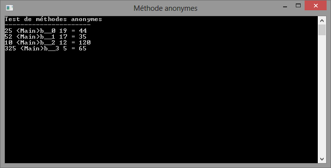
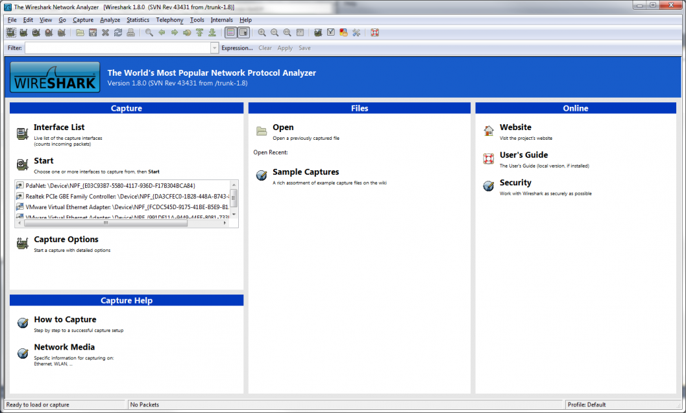
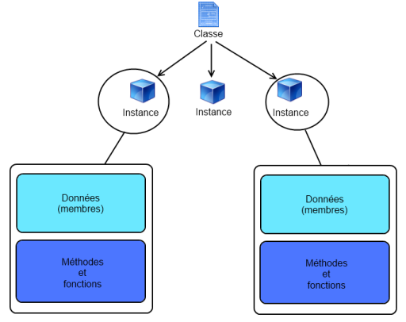
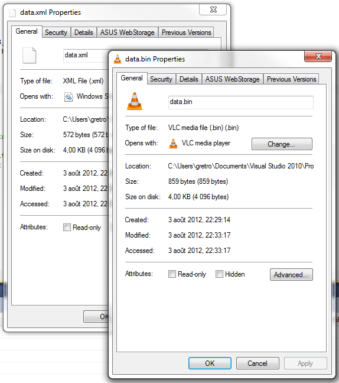

C'est le rêve ultime de tout programmeur débutant. Du moins, c'était le mien : La programmation en réseau. Aujourd'hui, même si je suis plus expérimenté, je dois avouer que j'aime encore l'idée de programmer en réseau. Je désire maintenant vous enseigner comment faire afin d'arriver à vos buts. Vous allez voir, il y a énormément d'étapes avant d'y parvenir. Certaines de ces étapes nécessitent la compréhension de concepts plus poussés comme les delegates, les interfaces et les threads. Je me suis donc donné comme mission de démystifier ces concepts pour vous.
Avant de commencer, j'aimerais vous avertir de quelques points :
Nous allons aborder la question des delegates. À ce stade-ci, votre code pourrait devenir un peu mêlant au début. Cependant, avec un peu d'expérience, on arrive à bien distinguer le tout. Si vous avez déjà programmé avec certains langages fondamentalement anonymes (Javascript est un bon exemple avec jQuery), vous comprendrez probablement plus rapidement.
Sans plus tarder, commençons par voir une petite description de ce qu'est exactement un delegate (anglais) ou délégué (français).
Un delegate est un concept abstrait du C#. Jusqu'à maintenant, une variable pouvait contenir de nombreuses choses. On traite, par exemple, les objets comme des variables. Elles permettent aussi de mettre en mémoire des données, comme du texte, des nombres entiers ou flottants, des booléens. Ces cas ne sont que des exemples.
Un delegate est en fait une variable un peu spéciale... Elle donne plutôt une référence vers une méthode. Ce type de variable est donc de type référence, comme un objet normal.
L'utilité sera bien évidemment d'envoyer ces delegates en paramètres ! Comment peut-on réussir à mettre une méthode dans une variable ? Rien de plus simple. Comme tout objet, une méthode est chargée en mémoire et possède donc une adresse mémoire. Par le même principe qui nous permet de référencer un objet à l'aide d'une variable, nous allons pouvoir référencer une méthode.
Si vous avez déjà fait de la programmation en C# autre qu'avec la Console, vous avez très probablement utilisé des delegates sans même vous en rendre compte. Pensez aux événements dans Windows Forms, ASP.NET ou WPF. Tout cela fonctionne à base de delegate.
Partis pour la gloire !
Je vais commencer par vous donner un exemple bien simple, un cas "facile".
using System;
using System.Collections.Generic;
using System.Linq;
using System.Text;
namespace TestThread
{
class Program
{
static void Main(string[] args)
{
bool resultat = Test("Ceci est un test qui est négatif !");
bool res2 = Test("Positif");
}
static public bool Test(string test)
{
return test.Length < 15;
}
}
}
On voit clairement une situation très usuelle ici. Vous appelez Test deux fois à partir du Main. Ce qui se passera, c'est que lorsque viendra le temps d'exécuter ce code, .NET lancera la méthode Test afin de donner un résultat à la variable resultat. On fait alors un appel de la méthode.
Je vais immédiatement déclarer un delegate pour la même situation, comme ça, vous verrez de quoi il en retourne.
using System;
using System.Collections.Generic;
using System.Linq;
using System.Text;
namespace TestThread
{
class Program
{
//Mon delegate aura exactement la même signature que ma méthode !
delegate bool PremierDelegate(string i);
static void Main(string[] args)
{
//Je crée une variable a qui contiendra la méthode Test.
PremierDelegate a = new PremierDelegate(Test);
//Au lieu d'appeler Test, je vais appeler a, ce qui me donnera le
//même résultat !
bool resultat = a("Ceci est un test qui est négatif !");
bool res2 = a("Positif");
}
static public bool Test(string test)
{
return test.Length < 15;
}
}
}
Bon, dans cet exemple, l'utilisation d'un delegate est carrément inutile, mais ils deviendront rapidement indispensables, surtout lors de la programmation réseau.
Une autre utilisation très fréquente des delegates est la gestion des événements ! Quand vous vous abonnez à un événement, vous abonnez tout simplement une méthode à une liste d'appel. Quand l’évènement se déclenche, on avertis donc tous les abonnés de ce qui s'est passé à l'aide de ce mécanisme.Si vous voulez plus d'informations, veuillez visiter le site de MSDN.
Les signatures de méthodes
Toute méthode possède une signature. Une signature de méthode, comme dans le monde réel, sert à identifier une méthode de façon plus ou moins unique. Si vous avez déjà fait de la programmation, peut-être avez-vous déjà vu ce concept.
La signature de méthode résout le problème des noms uniques dans le cas de surcharge d'une méthode. Dans les langages autorisant la surcharge de méthode, on se réfère à la signature plutôt qu'au nom de la méthode pour l'appeler. Pour chaque méthode surchargée doit correspondre une signature différente des autres méthodes portant le même nom.
Donc, la signature d'une méthode contient les informations suivantes :
L'identifiant de la méthode.
La séquence des types des paramètres, sans leur nom.
Notre méthode static public int Test(string test) a donc la signature suivante : Test(string);
La définition d'un delegate est un peu différente. Le nom de la méthode et des paramètres sont inutiles. Ce qui compte ce sont le type de retour et l'ordre des paramètres selon leur type (pas leur nom). Ainsi, un delegate ne pourra référer qu'une méthode possédant la même définition. C'est un peu abstrait sans exemple, alors voici un petit exemple.
Nous allons pouvoir faire référence à elle par le biais d'un delegate. Nous devrons cependant respecter sa définition, comme nous l'avons vu. Ainsi, nous devrons faire attention à indiquer exactement le même type de retour et le même ordre des paramètres (indépendamment de leur nom). Le delegate suivant respecte ces règles :
delegate string Methode(string a, string b);
L'autopsie d'un delegate !
Analysons maintenant comment créer ce fameux delegate. Voici la composition d'un delegate standard.
Voici un exemple. Passez votre curseur sur les arguments afin de mieux comprendre leur rôle : delegateintCalcul(int i1, int i2);
Ensuite, on utilise le delegate comme un type. On peut donc créer des objets avec le nom de ce type. On peut alors l'utiliser en tant que paramètre. Ce sera plus clair pour vous avec l'exemple qui suit :
using System;
using System.Collections.Generic;
using System.Linq;
using System.Text;
namespace TestThread
{
class Program
{
delegate int Calcul(int i1, int i2);
static void Main(string[] args)
{
//Affichage de la console.
Console.WriteLine("Test de delegate");
Console.WriteLine("----------------------");
//On passe à la méthode Afficher la méthode à lancer et les arguments.
Afficher(Add, 25, 19);
Afficher(Sub, 52, 17);
Afficher(Mul, 10, 12);
Afficher(Div, 325, 5);
//On ne ferme pas la console immédiatement.
Console.ReadKey();
}
//On fait une méthode générale qui prendra un delegate Calcul en paramètre.
static void Afficher(Calcul methodeCalcul, int i, int j)
{
Console.WriteLine("{0} {1} {2} = {3}", i, methodeCalcul.Method.Name,
j, methodeCalcul(i, j));
}
//Méthodes très simples qui ont toutes un type de retour et des paramètres identiques.
static int Add(int i, int j) { return i + j; }
static int Sub(int i, int j) { return i - j; }
static int Mul(int i, int j) { return i * j; }
static int Div(int i, int j) { return i / j; }
}
}
Ce n’est pas du chinois, mais ce n’est pas simple, hein ? En effet, ça arrache une grimace la première fois qu'on voit ça, mais en fait, c'est très simple. Comme toutes nos méthodes répondent à la même définition que notre delegateCalcul, nous sommes en mesure de toutes les utiliser en envoyant leur adresse mémoire en tant que paramètre. C'est un peu comme dire qu'un int peut égaler 0 ou bien 12154, car les deux répondent à la même définition, soit être un entier entre int.Min et int.Max. Cela est vrai car tous les nombres entiers qui répondent à ces exigences sont des int. Dans ce cas-ci, toutes les méthodes qui respectent la définition de Calcul peuvent être considérées de type délégué Calcul.
Ce code, bien que simple, est très puissant. Si je voulais ajouter l'opération modulo, il serait TRÈS TRÈS simple de le faire, vous ne trouvez pas ? Certains critiquent pourraient reprocher l'utilisation d'un delegate dans ce cas-ci et j'approuverais leurs critiques. Il serait probablement mieux d'utiliser un concept orienté-objet basé sur du polymorphisme afin de résoudre ce problème. Cependant, il ne s'agit que d'un exemple. Libres à vous d'utiliser la méthode qui vous plaît le plus par la suite.
Depuis la version 2.0 de .NET, il existe des delegates génériques qui permettent de faire à peu près tout ce dont on a besoin sans même avoir à se salir les mains à faire le travail douloureux (soit définir un type delegate). Ils viennent en deux variétés et peuvent couvrir la plupart des scénarios communs. Func<T, TResult> et Action<T> seront maintenant vos nouveaux amis. :D À eux deux, ils sauront probablement convenir à tous vos besoins en matière de delegate !
Regardons-les de plus près. À ce stade, vous devriez avoir vu les génériques et avoir compris leur fonctionnement.
Le delegate Action<T>
Action est un delegate de base qui prend un paramètre de type T et qui ne renvoie rien (void). D'ailleurs, voici sa syntaxe :
public delegate void Action<in T>(T obj)
Cela revient à créer un delegate comme suit :
delegate void Action(Object obj);
Sauf que dans ce cas, on profite des génériques, ce qui nous permet d'éviter les erreurs de transtypage.
Le delegate Func<T, TResult>
Func est un delegate qui se révèle bien utile dans le cas où l'on veut se référer à une méthode qui prend des paramètres de type T (à définir) et qui retourne un résultat de type TResult (encore une fois, un générique). La signature de Func va comme suit :
public delegate TResult Func<T, TResult>(T arg)
Et alors ?
Et si ces cas ne sont pas suffisants ? Si vous devez passer plusieurs paramètres à la méthode ? Devrez-vous créer votre propre delegate ?
Non, ne vous inquiétez pas. Microsoft a pensé à vous et a créé des delegates diversifiés qui sauront répondre à vos besoins. Voici l'exemple le plus simple, soit une méthode ne prenant pas de paramètres et ne retournant rien.
public delegate void Action()
Bien évidemment, des signatures plus étoffées sont disponibles. Dans cet exemple, on peut aller jusqu'à 16 paramètres.
public delegate void Action<in T1, in T2, in T3, in T4, in T5, in T6, in T7, in T8, in T9, in T10, in T11, in T12, in T13, in T14, in T15, in T16>(
T1 arg1,
T2 arg2,
T3 arg3,
T4 arg4,
T5 arg5,
T6 arg6,
T7 arg7,
T8 arg8,
T9 arg9,
T10 arg10,
T11 arg11,
T12 arg12,
T13 arg13,
T14 arg14,
T15 arg15,
T16 arg16
)
On retrouve la même situation avec Func.
Voici la signature la plus simple, soit une méthode retournant un résultat de type TResult et ne prenant pas de paramètres.
public delegate TResult Func<out TResult>()
Et voilà la plus complexe, soit 16 paramètres de type Tx et un résultat de type TResult.
public delegate TResult Func<in T1, in T2, in T3, in T4, in T5, in T6, in T7, in T8, in T9, in T10, in T11, in T12, in T13, in T14, in T15, in T16, out TResult>(
T1 arg1,
T2 arg2,
T3 arg3,
T4 arg4,
T5 arg5,
T6 arg6,
T7 arg7,
T8 arg8,
T9 arg9,
T10 arg10,
T11 arg11,
T12 arg12,
T13 arg13,
T14 arg14,
T15 arg15,
T16 arg16
)
Par contre, après ces 16 paramètres, à vous de créer votre propre delegate. Cependant, cela devrait être un cas rare.
Un petit exemple
Je vais simplement reprendre l'exemple des opérations arithmétiques pour vous montrer comment on va simplifier en utilisant des delegates génériques.
using System;
namespace ExempleGeneriques
{
internal class Program
{
//Plus besoin de définir le delegate de type Calcul.
private static void Main(string[] args)
{
//Affichage de la console.
Console.WriteLine("Test de delegate");
Console.WriteLine("----------------------");
//On passe à la méthode Afficher la méthode à lancer et les arguments.
Afficher(Add, 25, 19);
Afficher(Sub, 52, 17);
Afficher(Mul, 10, 12);
Afficher(Div, 325, 5);
//On ne ferme pas la console immédiatement.
Console.ReadKey();
}
//On fait une méthode générale qui prendra le delegate en paramètre.
private static void Afficher(Func<int, int, int> calcul, int i, int j)
{
Console.WriteLine("{0} {1} {2} = {3}", i, calcul.Method.Name,
j, calcul(i, j));
}
//Méthodes très simples qui ont toutes un type de retour et des paramètres identiques.
private static int Add(int i, int j) { return i + j; }
private static int Sub(int i, int j) { return i - j; }
private static int Mul(int i, int j) { return i * j; }
private static int Div(int i, int j) { return i / j; }
}
}
Et voilà, on a pu se débarrasser de notre propre delegate Calcul au profit de Func qui répond parfaitement à nos besoins ! N'est-ce pas merveilleux ?
Si vous avez fait un peu de Javascript, et en particulier du jQuery, vous comprenez déjà l'avantage des méthodes anonymes. Si vous provenez de Java et que vous avez fait du Swing, vous avez probablement déjà vu ce concept, mais à l'aide des classes anonymes.
On utilise les méthodes anonymes pour de petites actions qui ne se reproduisent pas à plus d'un endroit. Leur utilisation permet généralement d'alléger la syntaxe d'une classe. Nous allons voir immédiatement un exemple et vous comprendrez ce que je veux dire. Nous allons réintroduire l'exemple des méthodes de calcul.
public class Program
{
private static void Main(string[] args)
{
//Affichage de la console.
Console.WriteLine("Test de méthodes anonymes");
Console.Title = "Méthode anonymes";
Console.WriteLine("----------------------");
//Création d'un delegate avec une méthode anonyme. Dans ce cas, on pourra réappeler la méthode
//tant et aussi longtemps que le delegate additionner sera dans la portée de la méthode.
Func<int, int, int> additionner = new Func<int, int, int>(delegate(int i, int j) { return i + j; });
//Forme allégée, mais tout aussi efficace. Attention à bien respecter la signature du delegate.
Func<int, int, int> soustraire = (delegate(int i, int j) { return i - j; });
//On passe à la méthode Afficher le delegate à éxécuter et les arguments.
Afficher(additionner, 25, 19);
Afficher(soustraire, 52, 17);
//On peut définir la méthode anonyme à utiliser "in-line". Attention, après l'éxécution de cette
//ligne, on perd la référence mémoire à cette méthode.
Afficher(new Func<int, int, int>(delegate(int i, int j) { return i * j; }), 10, 12);
//On peut aussi également utiliser la syntaxe simplifiée si la signature respecte
//les requis de Func<int, int, int>.
Afficher((delegate(int i, int j) { return i / j; }), 325, 5);
//On ne ferme pas la console immédiatement.
Console.ReadKey();
}
//On fait une méthode générale qui prendra le delegate en paramètre.
private static void Afficher(Func<int, int, int> calcul, int i, int j)
{
Console.WriteLine("{0} {1} {2} = {3}", i, calcul.Method.Name,
j, calcul(i, j));
}
//Plus besoin de déclarer les méthodes de calcul.
}
Et voilà, on a fait un peu de ménage dans la classe Program. Voici d'ailleurs le résultat dans la console.
Résultat des calculs avec les méthodes anonymes.
Oops, vous voyez que l'on a perdu le nom des méthodes entre les chiffres. Cela est normal et indique que le compilateur a bien fait son travail. Puisqu'une méthode anonyme est justement anonyme, il n'y a aucun besoin pour nous de connaître son nom. Nous désirons simplement avoir son adresse en mémoire. Ce nom est le résultat de la compilation de votre code en MSIL. Pendant cette phase, le compilateur reconnaît les méthodes anonymes dans votre code et les crée à l'intérieur de la classe où réside votre méthode hôte. Au final, cela revient au même pour le compilateur. Cependant, pour nous, cela devient plus simple.
Logique des méthodes anonymes
Comme vous avez pu voir, les méthodes anonymes s'apparentent à des méthodes normales. L'exception est qu'elles sont déclarées à l'intérieur d'une méthode, qu'elles ne possèdent pas de nom, mais bien le mot-clef delegate et que le type de retour est déduit par le compilateur. Pour les rendre utilisables, il faut immédiatement les affecter à un delegate qui possède la même définition. Dans l'exemple précédent, le type Func<int, int, int> était le bon. Le delegate Calcul dont nous nous sommes débarassés aurait très bien fonctionné lui aussi.
Bref, voici les quelques règles à respecter :
Les méthodes anonymes ne possèdent pas de nom. On utilise plutôt le mot-clef delegate (ne pas utiliser une majuscule ici, car ce n'est pas la même chose).
Les méthodes anonymes ne déclarent pas de type de retour. Il est déduit par le compilateur.
Lors de leur création, le compilateur affecte un nom à la méthode et la place dans la classe hôte.
Il est impossible d'appeler la méthode autrement que par un delegate qui détient son adresse en mémoire.
Il est important d'affecter la méthode anonyme à un delegate afin de pouvoir l'appeler par la suite (soit dans une variable, soit dans un paramètre directement).
Les méthodes anonymes se plient aux règles des méthodes standards pour ce qui est de la signature des méthodes et de leurs définitions.
public class Program
{
private static void Main(string[] args)
{
//Affichage de la console.
Console.WriteLine("Test de méthodes anonymes");
Console.Title = "Méthode anonymes";
Console.WriteLine("----------------------");
int i = 13;
int j = 42;
Func<int> additionner = delegate() { return i + j; };
//L'utilisation de la méthode Invoke est optionnelle.
Console.WriteLine(additionner.Invoke());
//On ne ferme pas la console immédiatement.
Console.ReadKey();
}
}
Le code précédent produit bel et bien le résultat désiré. Cependant, ce genre d'architecture est à éviter autant que possible, car il devient rapidement mélangeant.
Cas concret d'utilisation des méthodes anonymes
public class Personne
{
public string Nom { get; set; }
public string Prenom { get; set; }
public int Age { get; set; }
public override string ToString()
{
return string.Format("{0} {1} - {2} ans", Prenom, Nom, Age);
}
}
public class Program
{
static void Main(string[] args)
{
//Création d'une liste de personnes.
List<Personne> liste = new List<Personne>() {
new Personne() { Nom = "Smith", Prenom="John", Age=39 },
new Personne() { Nom="West", Prenom="Adam", Age=26 },
new Personne() { Nom="Lebeau", Prenom="Ginette", Age=58 },
new Personne() { Nom="Lajeunesse", Prenom="Émilie", Age=16}
};
//On trie la liste en lui spécifiant comment le faire (delegate Comparison).
liste.Sort(delegate(Personne p1, Personne p2)
{
return p1.Age - p2.Age;
});
//Pour chaque personne dans la liste, on l'affiche dans la console.
liste.ForEach(delegate(Personne p) { Console.WriteLine(p); });
Console.ReadKey();
}
}
Et voilà une situation concrète où on utilise des méthodes anonymes pour éviter d’alourdir le code.
En résumé...
Les delegates sont des références vers des méthodes.
On peut les invoquer exactement comme des méthodes normales.
Pour qu'un delegate puisse référer une méthode, il faut qu'ils aient la même définition et vice-versa.
Il existe des delegates génériques (Action et Func) qui devraient permettre de couvrir la plupart des cas.
Les méthodes anonymes permettent de créer des méthodes sans avoir à leur donner de nom.
Les méthodes anonymes ne peuvent être invoquées que par les delegates qui détiennent une référence vers elles.
Le Père Noël n'existe pas... :'(
C'est terminé, je ne vous achale plus avec la théorie sur les delegates. Promis ! :p Cependant, rappelez-vous de ces règles, car elles nous seront très utiles, et ce, à partir du prochain chapitre. :waw: Eh bien oui, ça ne lâche jamais... Rendez-vous au prochain chapitre où nous verrons le multithreading en .NET.
Le multi-thread est aujourd'hui un concept des plus importants avec l'apparition des processeurs multi-coeurs il y a quelques années de cela. On se sert du multithreading notamment dans les traitements lourds, mais surtout dans les communications réseau et autres opération dites synchrones (ou bloquantes).
Seulement, l'utilisation des threads apporte son lot de complexité et de difficulté avec elle. Il faut, entre autres, penser à la gestion des accès concurrents, à la synchronisation des processus et j'en passe. Dans ce chapitre, je vous propose de jeter un oeil à ce que l'on peut faire en multi-thread avec .NET.
On parle beaucoup de threads ces temps-ci. Les processeurs des générations récentes sont des puces conçues afin d'optimiser le traitement des tâches en parallèle. Il y a quelques années de cela, à l'ère du Pentium 4, on ne cessait d'augmenter la fréquence d'horloge afin d'optimiser la vitesse d'un seul coeur. Chaque thread prenait donc un numéro et attendait son tour afin d'être traité par le processeur.
Ne vous méprenez pas, cela n'a pas vraiment changé, mais les processeurs ont commencé à traiter les threads simultanément; un peu comme on ouvre un deuxième comptoir caisse dans un magasin. Ce virage s'est amorcé avec la technologie HT sur les derniers Pentium 4, puis à l'aide de multiples coeurs avec les Core 2 Duo / Quad. Maintenant, dans les processeur de la génération Nehalem et plus haut (Intel Core i3, i5 et i7), il s'agit d'un mélange des deux, soit de multiples coeurs qui appliquent chacun une technologie HT.
Hé, mais moi j'ai un processeur AMD. Est-ce que je peux faire du multi-thread moi aussi ?
Cela explique un peu l'évolution de la technique de traitement des threads, mais je ne vous ai toujours pas expliqué comment fonctionne le multi-task en Windows.
Le multi-task en Windows
Un ordinateur, ça ne sait faire qu'une seule chose à la fois !
Windows, comme tout bon SE actuel se sert d'une méthode particulière afin de simuler un multi-task. La technique est bien simple, il s'agit de créer un système de jeton et de le passer à chaque processus pour un certain temps selon sa priorité.
En ce moment même, vous utilisez votre navigateur préféré pour visiter le site du Zéro, mais cela n'empêche pas votre ordinateur de vaquer à d'autres occupations. Par exemple, vous êtes peut-être en train de copier un fichier, ou même juste en train d'avoir 3 fenêtres ouvertes sur le Bureau en ce moment. Windows doit rafraîchir leur contenu à toutes les x millisecondes afin de créer un sentiment de fluidité chez l'utilisateur.
Donc, suivant cet exemple, Windows aura un jeton à accorder à votre navigateur web pour tant de temps, puis suspendra ses calculs et opérations et donnera le jeton à un autre traitement. Lorsqu'il reviendra au navigateur, celui-ci sera autorisé à continuer ses opérations. Comme ça, tout le monde est content, mais surtout l'utilisateur qui désire ouvrir Google Chrome en même temps que MSN et Word, ainsi que Visual Studio 2010. Ne riez pas, c'est pas mal le scénario actuel de mon PC en ce moment...
Les threads, enfin !
Les threads sont des exécutions que l'on sépare de l'exécution principale pour les raisons suivantes :
Créer un thread dans ces cas est utile afin de créer un certain parallélisme dans les exécutions.
Le cas des tâches bloquantes...
Une application Windows Forms est amenée à se rafraîchir assez fréquemment. Lors de grosses opérations ou d'opérations synchrones qui bloquent, tout le temps de calcul est alloué à ces tâches et non plus au rafraîchissement. Après un certain temps, Windows déclare l'application comme "Ne répondant plus". Si vous planifiez de distribuer votre application, ce comportement est inacceptable, vous en conviendrez. C'est dans ce type de cas qu'on utilisera les threads. Imaginez afficher une belle animation sur un Splash Screen alors que les ressources sont en chargement en arrière plan. Avec les threads, cela devient possible.
Les différents types de thread
Il est possible de créer deux types de threads, bien que cela revienne au même. Lors de l'instanciation de la classe Thread, il est possible de garder la référence de l'objet, ou de la laisse flotter. Si on ne la récupère pas, on appellera ce thread "indépendant". Il sera créé, puis lancé immédiatement. Comme on ne gardera pas la référence, on ne pourra pas contrôler ce thread du tout. Il fera ce qu'il a à faire, sans que l'on puisse intervenir (sauf en utilisant quelques primitives de synchronisation que nous verrons plus tard).
Voici comment déclarer un thread indépendant :
new Thread(fonction).Start();
Le type dépendant est beaucoup plus fréquent. Il s'agit de garder la référence sur l'objet afin de pouvoir l'analyser, le tester, l'influencer. Vous connaissez déjà tous comment le créer, mais pour la forme, voici un exemple :
Thread nomThread = new Thread(fonction);
Comment lancer le thread ?
Tout d'abord, assurez-vous d'utilisez l'espace de nom suivant : using System.Threading;.
Déclarer un nouveau thread va comme suit :
using System;
using System.Collections.Generic;
using System.Linq;
using System.Text;
using System.Threading;
namespace TestThread
{
class Program
{
static void Main(string[] args)
{
//On initialise l'object Thread en lui passant la méthode
//à exécuter dans le nouveau thread. Ça vous rappelle pas
//certains delegates ça ?
Thread th = new Thread(Afficher);
//Un thread, ça ne part pas tout seul. Il faut lui indiquer de
//commencer l'exécution.
th.Start();
Console.ReadKey();
}
static void Afficher()
{
//Code tout bête qui affiche la lettre A 1000 fois.
for (int i = 0; i < 1000; i++)
{
Console.Write("A");
}
}
}
}
Ce code fonctionne bien dans le cas où on n'a aucun paramètre à passer à la méthode. Il est un peu plus compliqué d'en passer, mais on s'en sort, vous verrez.
using System;
using System.Collections.Generic;
using System.Linq;
using System.Text;
using System.Threading;
namespace TestThread
{
class Program
{
static void Main(string[] args)
{
//Il faut créer un objet ParameterizedThreadStart dans le constructeur
//du thread afin de passer un paramètre.
Thread th = new Thread(new ParameterizedThreadStart(Afficher));
Thread th2 = new Thread(new ParameterizedThreadStart(Afficher));
//Lorsqu'on exécute le thread, on lui donne son paramètre de type Object.
th.Start("A");
th2.Start("B");
Console.ReadKey();
}
//La méthode prend en paramètre un et un seul paramètre de type Object.
static void Afficher(object texte)
{
for (int i = 0; i < 10000; i++)
{
//On écrit le texte passer en paramètre. N'oubliez pas de le caster
//car il s'agit d'un type Object, pas String.
Console.Write((string)texte);
}
Console.WriteLine("<------------Thread {0} terminé----------->", (string)texte);
}
}
}
Cet exemple est parfait pour vous montrer comment les threads sont imprévisibles, et c'est ce qui les rend compliqués ! Je vous montre le résultat chez moi.
Aléatoire 1
C'est pas bien beau tout ça. Je suis sûr que chez vous, c'est tout-à-fait différent. Même si je ne fais que le redémarrer, ce sera différent ! La leçon à retenir ici est que les threads sont imprévisibles, comme je l'ai expliqué plus haut. Pour preuve, j'ai relancé le même processus un peu plus tard, et voici le résultat :
Aléatoire 2
On voit très bien que dans ce cas-ci, le Thread B a terminé en premier, ce qui prouve que le même code peut générer des résultats différents d'une exécution à l'autre s'il est programmé avec des threads !
Cas particuliers
Même si un thread s'exécute en deçà de votre programme principal, il reste que la méthode qu'il exécute fait partie de la classe à laquelle la méthode appartient. Cela signifie que l'accès aux variables globales et membres de votre classe lui seront accessibles sans problème.
Là où le problème se pose, c'est lorsque plusieurs threads devront accéder à la même variable, y faire des changements et des tests. Imaginez que votre thread A accède aux variables numérateur et dénominateur qui sont globales (à proscrire, mais bon). Le thread A a le temps de faire quelques tests, à savoir vérifier si le dénominateur n'est pas égal à zéro avant de procéder à une division. Tous les tests passent, mais juste au moment où le thread arrive pour effectuer l'opération, le thread B s'empare du jeton. Le thread B est chargé de réinitialiser le dénominateur à 0, et c'est ce qu'il fait. À ce moment là, le jeton revient au thread A qui tente d'effectuer la division. Oops, ça plante... C'est ce qu'on appelle un problème de synchronisation. Je ne vais pas vous mentir, ces problèmes sont rares. Il faut vraiment que vous soyez malchanceux. Il reste cependant important de bien synchroniser ses threads, surtout si l'on aspire à commercialiser le produit. Ainsi, plusieurs structures de synchronisation existent, et nous allons en survoler quelques unes.
Il peut sembler que les variables de contrôle soient un concept très poussé, mais pas du tout ! Il s'agit bêtement d'une variable globale que seul le thread principal modifiera et que les threads enfants contrôleront. Ce concept est particulièrement efficace dans le cas où le thread effectue une boucle infinie. Encore une fois, ça sent la programmation réseau ici. Je vous illustre le concept à l'aide d'un petit exemple pas très compliqué.
using System;
using System.Collections.Generic;
using System.Linq;
using System.Text;
using System.Threading;
namespace VarControle
{
class Program
{
//Quelques variables à portée globale.
private static bool _quitter = false;
private static int _identificateur = 0;
static void Main(string[] args)
{
Console.Title = "Variables de contrôle";
//On crée un tableau de threads.
Thread[] threads = new Thread[5];
//On itère à travers le tableau afin de créer et lancer les threads.
for(int i = 0; i< threads.Length; i++)
{
//Création et lancement des threads.
threads[i] = new Thread(OperThread);
threads[i].Start();
//On laisse passer 500ms entre les création de thread.
Thread.Sleep(500);
}
//On demande à ce que tous les threads quittent.
_quitter = true;
Console.ReadKey();
}
static void OperThread()
{
//On donne au thread un identificateur unique.
int id = ++_identificateur;
Console.WriteLine("Début du thread {0}", id);
while (!_quitter)
{
//On fait des choses ici tant qu'on ne désire pas quitter...
Console.WriteLine("Thread {0} a le contrôle", id);
//On met le thread en état de sommeil pour 1000ms / 1s.
Thread.Sleep(1000);
}
Console.WriteLine("Thread {0} terminé", id);
}
}
}
Voici le résultat :
Ce mécanisme est très simple et très populaire afin de contrôler le déroulement de ses threads. Cependant, n'oubliez pas de faire en sorte, lors d'un long traitement ou une boucle, de vérifier assez fréquemment que la sortie n'est pas nécessaire. C'est ce que nous ferons lorsque nous serons prêts à faire du développement en réseau.
Avez-vous remarqué un bout de code qui ne vous semblait pas thread-safe ? Si oui, vous comprendrez certainement l'utilité du prochain mécanisme de synchronisation.
//On donne au thread un identificateur unique.
int id = ++_identificateur;
Ce bout de code n'est pas thread-safe, car on ne sait pas si un autre processus pourrait prendre le contrôle au mauvais moment. Si l'ordre de lancement est très important, cette ligne pourrait ne pas s'exécuter à temps.
Le lock
L'instruction lock permet de verrouiller efficacement une ressource tant et aussi longtemps qu'un bloc d'instruction est en cours. Cela signifie que si d'autres threads tentent d'accéder à la même ressource en même temps, ils ne pourront pas. Cela ne signifie pas qu'ils planteront et se termineront, mais plutôt qu'ils passeront le jeton à un autre thread et attendront patiemment leur tour afin d'accéder à cette ressource.
Voici un bel exemple :
using System;
using System.Collections.Generic;
using System.Linq;
using System.Text;
using System.Threading;
namespace Lock
{
class Program
{
//Variable témoin du lock.
private static Object _lock = new Object();
//Sert à initialiser des valeurs pseudos-aléatoires.
private static Random _rand = new Random((int)DateTime.Now.Ticks);
//Variable de contrôle.
private static bool _quitter = false;
//Variables globales étant affectées par les threads.
private static int _numerateur;
private static int _denominateur;
static void Main(string[] args)
{
Console.Title = "Démonstration des lock";
//On crée les threads.
Thread init = new Thread(Initialiser);
init.Start();
Thread reinit = new Thread(Reinitialiser);
reinit.Start();
Thread div = new Thread(Diviser);
div.Start();
//On les laisse travailler pendant 3 seconde.
Thread.Sleep(3000);
//Puis on leur demande de quitter.
_quitter = true;
Console.ReadKey();
}
private static void Initialiser()
{
//Boucle infinie contrôlée.
while (!_quitter)
{
//On verouille l'accès aux variables tant que l'on a pas terminé.
lock (_lock)
{
//Initialisation des valeurs.
_numerateur = _rand.Next(20);
_denominateur = _rand.Next(2, 30);
}
//On recommence dans 250ms.
Thread.Sleep(250);
}
}
private static void Reinitialiser()
{
//Boucle infinie contrôlée.
while (!_quitter)
{
//On verouille l'accès aux variables tant que l'on a pas terminé.
lock (_lock)
{
//Réinitialisation des valeurs.
_numerateur = 0;
_denominateur = 0;
}
//On recommence dans 300ms.
Thread.Sleep(300);
}
}
private static void Diviser()
{
//Boucle infinie contrôlée.
while (!_quitter)
{
//On verouille pendant les opérations.
lock (_lock)
{
//Erreur si le dénominateur est nul.
if (_denominateur == 0)
Console.WriteLine("Division par 0");
else
{
Console.WriteLine("{0} / {1} = {2}", _numerateur, _denominateur, _numerateur / (double)_denominateur);
}
}
//On recommence dans 275ms.
Thread.Sleep(275);
}
}
}
}
Résultat :
Donc, dans cet exemple, on voit que tout est bien protégé. Aucun thread ne peut venir interférer avec les autres. Remarquez la création d'une instance d'un objet de type Object à la ligne 12. Cela est notre témoin de verrouillage. En réalité, n'importe quel objet qui se passe en référence peut servir de témoin de verrouillage. Comme nous avons travaillé avec des entiers(int) dans cet exemple et que ce type est passé par valeur, nous avons eu à créer cette variable.
Voici un exemple où une l'instanciation d'un objet témoin supplémentaire est inutile :
using System;
using System.Collections.Generic;
using System.Linq;
using System.Text;
using System.Threading;
namespace lockEx
{
class Program
{
static List<string> liste = new List<string>();
static void Main(string[] args)
{
for (int i = 0; i < 6; i++)
new Thread(Ajouter).Start();
}
static void Ajouter()
{
lock(liste)
liste.Add("abc");
}
}
}
Ici, on utilisera donc l'objet liste qui se passe par référence, et qui est donc acceptable.
Les Mutex
Les Mutex sont excessivement similaires aux lock. Cependant, si vous désirez créer de nombreuses sections critiques indépendantes, les Mutex ont l'avantage d'être sous forme d'objets plutôt que d'instructions. Un petit exemple vous éclaira sur l'utilisation des Mutex.
using System;
using System.Collections.Generic;
using System.Linq;
using System.Text;
using System.Threading;
namespace MutexEx
{
class Program
{
private const int TAILLE_TABLEAU = 2;
//On crée les Mutex.
private static Mutex _muxMultiplier = new Mutex();
private static Mutex _muxDiviser = new Mutex();
//On crée les tableaux de valeurs.
private static int[] _valDiv = new int[TAILLE_TABLEAU];
private static int[] _valMul = new int[TAILLE_TABLEAU];
//Objet Random et variable de contrôle.
private static Random _rand = new Random((int)DateTime.Now.Ticks);
private static bool _quitter = false;
static void Main(string[] args)
{
Console.Title = "Exemple de Mutex";
//On crée et on démarre les threads.
Thread init = new Thread(Initialiser);
init.Start();
Thread mul = new Thread(Multiplier);
mul.Start();
Thread div = new Thread(Diviser);
div.Start();
//On laisse les threads fonctionner un peu...
Thread.Sleep(3000);
//On demande à ce que les opérations se terminent.
_quitter = true;
Console.ReadKey();
}
private static void Initialiser()
{
while (!_quitter)
{
//On demande au thread d'attendre jusqu'à ce qu'il ait le contrôle sur les Mutex.
_muxMultiplier.WaitOne();
_muxDiviser.WaitOne();
for (int i = 0; i < TAILLE_TABLEAU; i++)
{
//On assigne au tableau de nouvelles valeurs.
_valMul[i] = _rand.Next(2, 20);
_valDiv[i] = _rand.Next(2, 20);
}
Console.WriteLine("Nouvelles valeurs !");
//On relâche les Mutex
_muxDiviser.ReleaseMutex();
_muxMultiplier.ReleaseMutex();
//On tombe endormi pour 100ms.
Thread.Sleep(100);
}
}
private static void Multiplier()
{
while (!_quitter)
{
//On demande le Mutex de multiplication.
_muxMultiplier.WaitOne();
//On multiplie.
Console.WriteLine("{0} x {1} = {2}", _valMul[0], _valMul[1], _valMul[0] * _valMul[1]);
//On relâche le Mutex.
_muxMultiplier.ReleaseMutex();
//On tombe endormi pour 200ms.
Thread.Sleep(200);
}
}
private static void Diviser()
{
while (!_quitter)
{
//On demande le Mutex de division.
_muxDiviser.WaitOne();
//On divise.
Console.WriteLine("{0} / {1} = {2}", _valDiv[0], _valDiv[1], _valDiv[0] * _valDiv[1]);
//On relâche le Mutex de Division.
_muxDiviser.ReleaseMutex();
//On tombe endormi pour 200ms.
Thread.Sleep(200);
}
}
}
}
Si vous avez fait un peu de programmation en Win32 (langage C), vous pouvez voir la lignée directe des Mutex du .NET et des CRITICAL_SECTION du Win32. Sinon, vous voyez que les Mutex ont la même fonction que l'instruction lock en un peu plus verbeux. Je tiens cependant à vous avertir que de ne pas relâcher un Mutex peut faire planter votre application, donc faîtes attention à cela.
SemaphoreSlim
Le SemaphoreSlim sert à contrôler l'accès d'une ressource limitée. Jusqu'à maintenant, les mécanismes de synchronisation dont nous avons parlé ont surtout servi à limiter une ressource à un accès mutuellement exclusif entre des threads concurrents. Qu'en est-il si l'on veut partager une ressource à travers plusieurs threads simultanément tout en gardant un nombre maximal d'accès concurrent ? Les sémaphores existent pour cette raison. En C# .NET, il existe deux types de sémaphores. Le classique Semaphore et le SemaphoreSlim. La différence provient de la complexité de l'objet et des mécanismes internes. Le Semaphore utilise un wrapper autour de l'objet Semaphore du Win32 et rend donc disponible ses fonctionnalités en .NET. Le SemaphoreSlim, lui, est plutôt utilisé lors de courtes durées d'attente et utilise les mécanismes propres au CLR.
Je ne montrerai que le SemaphoreSlim, les deux se ressemblant beaucoup. Cependant, le SemaphoreSlim reste le plus facile et le plus léger à implémenter. Pour plus d'information sur la différence, veuillez lire cet article sur MSDN. Peu importe la version qui est choisie, vous pouvez voir les Sémaphores comme un "doorman" dans une boîte de nuit. La place à l'intérieur est limitée et le doorman devra contrôler l'accès à la ressource.
using System;
using System.Collections.Generic;
using System.Linq;
using System.Text;
using System.Threading;
namespace SemaphoreSlimEx
{
class Program
{
//Déclaration du SemaphoreSlim qui prendra en paramètre le nombre de places disponibles.
static SemaphoreSlim doorman = new SemaphoreSlim(3);
static void Main(string[] args)
{
Console.Title = "Exemple de SemaphoreSlim";
//Création des threads.
for (int i = 0; i < 10; i++)
new Thread(Entrer).Start(i);
Console.ReadKey();
}
static void Entrer(object n)
{
Console.WriteLine("La personne #{0} veut entrer", n);
//Le doorman attendra qu'il y ait de la place.
doorman.Wait();
Console.WriteLine("#{0} vient d'entrer dans le bar", n);
Thread.Sleep((int)n * 1000);
Console.WriteLine("#{0} a quitté le building !", n);
//Le doorman peut maintenant faire entrer quelqu'un d'autre.
doorman.Release();
}
}
}
Le Join()
C'est le dernier mécanisme de synchronisation dont je parlerai. Il s'agit très simplement d'attendre la fin d'un autre thread afin de continuer le thread dans lequel le Join() est défini. Cela en fait une méthode bloquante qui pourrait vous causer des problèmes en Windows Forms.
Petit exemple :
using System;
using System.Collections.Generic;
using System.Linq;
using System.Text;
using System.Threading;
namespace TestThread
{
class Program
{
static void Main(string[] args)
{
Thread th = new Thread(new ParameterizedThreadStart(Afficher));
Thread th2 = new Thread(new ParameterizedThreadStart(Afficher));
th.Start("A");
//On attend la fin du thread A avant de commencer le thread B.
th.Join();
th2.Start("B");
Console.ReadKey();
}
static void Afficher(object texte)
{
for (int i = 0; i < 10000; i++)
{
Console.Write((string) texte);
}
}
}
}
Le Join est généralement utilisé en conjoncture avec une variable de contrôle. Ainsi, on demande aux threads dépendants de s'arrêter, puis on les attends avant de continuer. Retenez bien cette façon de fonctionner, parce que c'est comme cela que nous procéderons lorsque notre application devra quitter en ayant des ressources réseau ouvertes.
Le Abort()
Bon, après avoir vu comment bien synchroniser ses threads, voyons ce que vous ne devez PAS faire !!! :pirate:
using System;
using System.Collections.Generic;
using System.Linq;
using System.Text;
using System.Threading;
namespace ThreadStop
{
class Program
{
static void Main(string[] args)
{
Thread thread = new Thread(Test);
thread.Start();
Thread.Sleep(100);
//On tue le processus. À NE PAS FAIRE !
thread.Abort();
Console.ReadKey();
}
public static void Test()
{
for(int i = 0; i < 10000; i++)
Console.WriteLine(i);
}
}
}
using System;
using System.Collections.Generic;
using System.Linq;
using System.Text;
using System.Threading;
namespace ThreadStop
{
class Program
{
private static bool _continuer = true;
static void Main(string[] args)
{
Thread thread = new Thread(Test);
thread.Start();
Thread.Sleep(100);
//On demande au thread de s'arrêter au prochain passage d'un moment qui semble naturel.
_continuer = false;
//On attend que le thread se termine proprement.
thread.Join();
Console.ReadKey();
}
public static void Test()
{
//On fait 10 000 itérations, tant et aussi longtemps que l'on peut continuer (variable de contrôle).
for(int i = 0; i < 10000 && _continuer; i++)
Console.WriteLine(i);
}
}
}
Et voilà, on se sent toujours mieux quand on fait quelque chose de bien, non ? Comme ça, si le thread a besoin de temps pour bien terminer ses opérations (appeler quelques Dispose(), ou fermer des connexions TCP), il le pourra. Utilisez donc les Join() et pas les Abort(). Les Abort(), c'est mal ! :diable:
En résumé...
Le système de jetons permet à un système d'exploitation de simuler un parallélisme dans les tâches.
L'implémentation du multithreading dans une application a pour conséquence d’alourdir son code, mais de la rendre plus facile d'utilisation (généralement).
On utilise le multithreading lorsqu'on est confronté à de lourdes tâches, des tâches détachées ou des tâches bloquantes.
L'objet Thread nous permet de créer et de gérer un thread en .NET.
Les applications multi-threads sont imprévisibles. Il est donc importer de maintenir les zones critiques synchronisées.
Nous sommes maintenant prêts à aborder le sujet du multi-tâche en Windows Forms ! Je vous montrerai comment éviter que cela ne vire en catastrophe, ne craignez rien. De plus, si vous êtes intéressé par le multi-thread, je vous conseille de vous informer sur le Parallel Tasking auprès de MSDN. Ce nouvel API très puissant est apparu avec le framework 4.0 de .NET et est très intéressant pour effectuer des traitements lourds.
Bon, je sais que les Windows Forms ne sont pas nécessairement d'actualité. Mais croyez-moi, ce sera bien plus simple pour vous expliquer comment les threads peuvent prendre place dans un écosystème graphique. Certaines pratiques que l'on peut considérer comme faciles et courantes peuvent rapidement prendre une tournure plus complexe dès que l'on ajoute le facteur interface graphique.
Je ne vous en dit pas plus, je vous laisse lire à la place. :D
Les delegates ont des utilités que vous ne soupçonnez probablement même pas. Si je vous parle d'évènements, est-ce que cela vous éclaire ?
Le cas des évènements
Les Windows Forms ont depuis leur tout début fonctionné avec des évènements. Lorsque l'on crée nos formulaires dans le designer, on est loin de se douter que tout un mécanisme se situe en arrière. On se contente généralement d'accéder à son objet, d'ouvrir la fenêtre Propriétés et de cliquer sur la petite éclair. Là, dans ce menu, on trouve un éventail d'évènements auxquels on peut s'abonner afin de bien personnaliser nos interfaces graphiques à notre goût.
On a l'embarras du choix pour ce qui est de évènements en Windows Forms !
Cependant, dès que vous double-cliquez sur une de ces entrées, vous vous trouvez en fait à créer un delegate qui fera référence à la méthode qui gère l'évènement. Ainsi, vous, en tant qu'utilisateur du Designer de Visual Studio, vous n'y voyez que du feu. Je vous propose d'ouvrir un fichier Designer juste pour voir tout le travail qui est effectué pour vous automatiquement. Vous n'en reviendriez pas ! Dans votre explorateur de Solution, cliquez sur la flèche qui se situe à gauche d'un de vos formulaires Windows. Vous y découvrirez le fichier suivant : <NomDuFormulaire>.Designer.cs. Ouvrez-le.
Voici une des lignes qui nous intéresse :
this.FormClosing += new System.Windows.Forms.FormClosingEventHandler(this.FrmServer_FormClosing);
L'abonnement aux évènements
Nous allons voir comment faire pour nous abonner manuellement à un évènement. D'abord, sachez que les évènements se présentent comme des membres de l'instance que vous manipulez. Il s'agit en fait d'une collection de delegates. Cette collection se comporte un peu différemment des collections traditionnelles que vous connaissez. En effet, on peut s'abonner plusieurs fois au même évènement. Voilà pourquoi nous utiliserons l'opérateur += pour nous abonner. Ensuite, nous allons déclarer une instance de notre delegate. Dans le cas des évènements, on préfère déclarer notre propre type de delegate pour éviter toute confusion. Dans ce cas-ci, le delegate qui nous intéresse se nomme FormClosingEventHandler. Afin de s'abonner, il faudra créer une instance du delegate en question et lui faire pointer sur la méthode que l'on désire exécuter lorsque l'évènement sera déclenché.
Le résultat est d'une simplicité extraordinaire et la ligne de code est claire et concise ! De plus, pas de code entremêlé, l'action se déroule dans une méthode à part. D'ailleurs, cette méthode pourra avoir de spécificité selon le delegate. La forme la plus courante est celle-ci :
Dans tous les cas ou presque, le premier paramètre contient l'objet qui a déclenché l'évènement. Si vous avez appuyé sur un bouton, c'est ce dernier que vous retrouverez dans sender, merci à l'héritage et au polymorphisme ! Le deuxième paramètre est généralement celui qui détermine le type de delegate que l'on utilise lorsque l'on crée un contrôle personnalisé. Il s'agit d'un paramètre fourre-tout. Ce dernier contient beaucoup d'informations, bien souvent inutiles, mais parfois indispensables. Dans le cas classique, on retrouve un objet de type EventArgs. Sachez cependant que tous les évènements standards en Windows Forms ou presque donnerons dans ce paramètre un objet d'un type qui dérive d'EventArgs.
Je vous donne un exemple classique d'un évènement et un exemple un peu plus spécial.
//Exemple générique...
private void btnEvents_Click(object sender, EventArgs e)
{
//Faire quelque chose lors du click du bouton.
}
//Exemple plus spécialisé...
private void FrmServer_FormClosing(object sender, FormClosingEventArgs e)
{
_loop = false;
//On attend la fin de l'exécution.
_listenerThread.Join();
}
Vous devriez maintenant savoir pourquoi vous avez fait royalement planter votre compilateur à vos débuts lorsque vous avez bêtement retiré une méthode de votre code car vous ne pensiez plus avoir à gérer l'évènement d'un tel objet. À bien y penser maintenant, il devient évident que si la méthode était l'objet d'une référence d'un delegate et que l'on retire la soi-disant méthode, il est bien normal que le tout plante.
Ça ne paraît peut-être pas, mais vous venez de commencer à comprendre les mécanismes en arrière de la programmation évènementielle. Il y en a beaucoup plus à connaître et à maîtriser, mais c'est un grand pas en avant ! ^^
Comptez-vous chanceux que Microsoft ait décidé d'implémenter ce concept en .NET. Si ça n'avait pas été le cas, nous serions aujourd'hui pris avec la même structure que Java et son API graphique Swing pour ce qui est des évènements : Les interfaces. Bien qu'utiles, je trouve personnellement que de déclarer des classes anonymes en plein milieu du code soit un peu déroutant et surtout, très mélangeant. Avec les delegates, on arrive au même mais beaucoup plus proprement.
Lorsque viendra le temps de faire du réseau, il sera important de respecter la sécurité interne des ressources. Il sera très souvent intéressant de modifier un objet Windows Forms avec les données issues d'un autre thread. C'est notamment le cas en réseau, si on fait un programme de ch@t, par exemple.
Rappelez-vous, un peu plus tôt, quand je vous ai dit qu'un thread, même s'il est séparé, a accès aux membres de sa classe ? Je ne vous ai pas menti. Mais dans le cas des objets Windows Forms, ceux-ci ne sont pas bâties thread-safe. Windows Forms limite donc leurs possibilités en multi-thread. Cela signifie malheureusement que les autres threads ne pourront accéder aux propriétés qu'en lecture seule. Il n'y a que le thread propriétaire qui puisse modifier le composant. Je vous donne un exemple :
J'ai construit une Windows Forms très simple n'ayant que deux éléments :
Une ProgressBar
Un Bouton
J'ai ajouté le code suivant dans le fichier Form1.cs.
using System;
using System.Collections.Generic;
using System.ComponentModel;
using System.Data;
using System.Drawing;
using System.Linq;
using System.Text;
using System.Windows.Forms;
using System.Threading;
namespace ThreadWForms
{
public partial class Form1 : Form
{
private Random rand = new Random((int)DateTime.Now.Ticks);
private int[] tableau = new int[100000000];
public Form1()
{
InitializeComponent();
//On génère un tableau d'entiers aléatoires.
for (int i = 0; i < tableau.Length; i++)
{
tableau[i] = rand.Next(50000); //...Boucle très simple, avec méthode Random très simple.
}
}
public void Selection()
{
//On va simplement compter les nombres du tableau inférieurs à 500.
int total = 0;
for (int i = 0; i < tableau.Length; i++)
{
if (tableau[i] < 500)
{
total++;
}
//Puis, on incrémente le ProgressBar.
pgbThread.Value = (int)(i / (double)tableau.Length * 100);
}
}
private void btnLancer_Click(object sender, EventArgs e)
{
//On crée le thread.
Thread t1 = new Thread(new ThreadStart(Selection));
//Puis on le lance !
t1.Start();
}
}
}
Alors, je vous l'avais pas dit que ça ne marcherait pas ? Il existe heureusement une façon bien simple de contrer ce problème, et c'est de passer par les delegates ! En effet, car si ceux-ci peuvent être passés en paramètres, il peuvent aussi servir à exécuter des opérations sur un thread différent à l'aide de la méthode Invoke !
using System;
using System.Collections.Generic;
using System.ComponentModel;
using System.Data;
using System.Drawing;
using System.Linq;
using System.Text;
using System.Windows.Forms;
using System.Threading;
namespace ThreadWForms
{
public partial class Form1 : Form
{
private Random rand = new Random((int)DateTime.Now.Ticks);
private int[] tableau = new int[500000];
//On crée notre delagate.
public delegate void MontrerProgres(int valeur);
bool termine = true;
public Form1()
{
InitializeComponent();
//On génère un tableau d'entiers aléatoires.
for (int i = 0; i < tableau.Length; i++)
{
tableau[i] = rand.Next(50000); //...Boucle très simple, avec méthode Random très simple.
}
}
public void Selection()
{
//On va simplement compter les nombres du tableau inférieurs à 500.
int total = 0;
for (int i = 0; i < tableau.Length; i++)
{
if (tableau[i] < 500)
{
total++;
}
//Puis, on incrémente le ProgressBar.
int valeur = (int)(i / (double)tableau.Length * 100);
//On achète la paix, on entoure notre Invoke d'un try...catch !
try
{
//On invoque le delegate pour qu'il effectue la tâche sur le temps
//de l'autre thread.
Invoke((MontrerProgres)Progres, valeur);
}
catch (Exception ex) { return; }
}
termine = true;
}
private void btnLancer_Click(object sender, EventArgs e)
{
//Petite sécurité pour éviter plusieurs threads en même temps.
if (termine)
{
//On crée le thread.
Thread t1 = new Thread(new ThreadStart(Selection));
termine = false;
//Puis on le lance !
t1.Start();
}
}
public void Progres(int valeur)
{
//On met la valeur dans le contrôle Windows Forms.
pgbThread.Value = valeur;
}
}
}
Petites explications : Un Invoke sert à demander à l'autre thread de s'occuper d'une action dans un moment libre. C'est l'équivalent d'envoyer un email à un webmestre pour qu'il corrige une erreur sur sa page web. Dès qu'il le pourra, le webmestre s'occupera de corriger l'erreur. Il s'agit du même principe ! Cela permet de contourner le manque thread-safe des contrôles Windows Forms, car c'est le thread propriétaire qui finit par effectuer l'action.
Aussi, vous avez peut-être fait la grimace en apercevant la ligne 55. Il y a un cast d'un delegate juste avant le nom de la méthode. Cela évite d'avoir à créer un delegate. Je pourrais très bien remplacer cette ligne par ceci : Invoke(new MontrerProgres(Progres), valeur); ou même par une méthode anonyme.
La classe BackgroundWorker fournit un environnement d'exécution multitâche très sécuritaire, mais un peu limité à mon goût. Cependant, je vais quand même vous montrer comment l'utiliser. L'objet BackgroundWorker se trouve dans la barre d'outils dans la catégorie Composants. Il s'agit d'un petit objet pas très personnalisable qui possède très peu de paramètres et d’évènements. Je vous montre par un exemple comment l'utiliser. J'ai fait un simple projet Windows Forms dans Visual Studio qui comporte une ProgressBar et un bouton de départ, tout comme l'exemple précédent.
using System;
using System.Collections.Generic;
using System.ComponentModel;
using System.Data;
using System.Drawing;
using System.Linq;
using System.Text;
using System.Windows.Forms;
using System.Threading;
namespace Background_WorkerEx
{
public partial class Form1 : Form
{
private bool _etat = false;
public Form1()
{
InitializeComponent();
//On demande à ce que le BackgroundWorker supporte le rapport de progrès et l'annulation.
bwProgress.WorkerReportsProgress = true;
bwProgress.WorkerSupportsCancellation = true;
//On abonne le BackgroundWorker aux évenements requis.
bwProgress.DoWork+=new DoWorkEventHandler(bwProgress_DoWork);
bwProgress.ProgressChanged+=new ProgressChangedEventHandler(bwProgress_ProgressChanged);
bwProgress.RunWorkerCompleted+=new RunWorkerCompletedEventHandler(bwProgress_RunWorkerCompleted);
}
private void bwProgress_DoWork(object sender, DoWorkEventArgs e)
{
int i = 0;
//Tant et aussi longtemps que la barre n'a pas atteint le 100% et qu'on
//ne demande pas à annuler...
while (i < 100 && !bwProgress.CancellationPending)
{
//On attend 150ms.
Thread.Sleep(150);
//On retrouve la valeur la plus petite entre 100 et i + 3.
i = Math.Min(100, i + 3);
//On rapporte le progrès fait.
bwProgress.ReportProgress(i);
}
}
private void btnStart_Click(object sender, EventArgs e)
{
//Le bouton joue le rôle de démarrage comme d'annulation selon la situation.
if (!_etat)
{
bwProgress.RunWorkerAsync();
btnStart.Text = "Annuler";
}
else
{
bwProgress.CancelAsync();
btnStart.Text = "Démarrer";
}
_etat = !_etat;
}
private void bwProgress_ProgressChanged(object sender, ProgressChangedEventArgs e)
{
//On fait avancer la ProgressBar.
pgProgress.Value = e.ProgressPercentage;
}
private void bwProgress_RunWorkerCompleted(object sender, RunWorkerCompletedEventArgs e)
{
//Lorsque c'est terminé, on affiche un message indiquant la fin de l'activité.
MessageBox.Show("Le BackgroundWorker a terminé");
}
}
}
Donc avec le BackgroundWorker, le multi-tâche en Windows Forms devient très facile comme vous pouvez le voir. Tous les évènements appelés seront exécutés dans le thread principal, éliminant ainsi l'utilisation de la commande Invoke. Magique n'est-ce pas ? :magicien:
En résumé...
Les évènements fonctionnent à l'aide des delegates en C# (que ce soit en Windows Forms, en WPF ou même en Console).
Le multithreading en Windows Forms apporte quelques inconvénients, car seulement le thread qui a créé les composants peut les modifier.
La classe BackgroundWorker existe pour faciliter la gestion des threads dans un environnement Windows Forms.
Maintenant que vous avez vu comment l'interface graphique est avare de ses composants, je suis sûr que vous êtes heureux que nous ayons effectué cette petite expérience en Windows Forms. De plus, si vous êtes un jour amené à maintenir une application multi-thread en .NET, je suis prêt à parier que celle-ci sera en Windows Forms, car WPF est encore trop jeune.
Nous allons enchaîner avec un petit Travail Pratique. Je vous conseille fortement de le faire afin de mettre en pratique ce que nous avons vu dans les derniers chapitres.
Notre premier Travail Pratique ne sera pas très difficile. Il s'agira surtout de bien assimiler les notions reliées aux delegates, aux méthodes anonymes et au multi-threading. J'ai choisi un travail qui devrait nous permettre de nous familiariser d'avantage avec ces nouvelles notions.
Nous voulons créer un nouveau type de liste qui pourra être facilement utilisable en tout contexte, qui sera générique et qui sera triable à souhait. Nous allons appeller cette liste, la ListeTriable. On fera usage du plus simple algorithme de tri (et le plus désastreux au niveau performance), j'ai nommé le tri à bulle. Hourrraaaahhhh ! :D
Commencez par ouvrir un nouveau projet en Console. Nous commencerons en douceur.
Les classes de base
La liste triable
Dans un premier temps, nous allons nous concentrer à créer la classe de base, sans fonctionnalité de tri. Je vais vous donner le code, ça ira plus vite. Cependant, si vous désirez la coder vous-mêmes, ce sera encore mieux. Si vous désirez la faire vous-mêmes, voici quelques règles à suivre.
Il faudra s'assurer que la classe soit générique.
La liste devra utiliser un tableau (Array) afin de fonctionner. Plus il y aura d'éléments dans la liste, plus ce tableau grandira. En fait, sa taille doublera lorsque nous aurons à accomoder plus d'éléments. Utilisez la méthode Array.Resize(ref T[] Array, int nouvelleTaille); lorsque nécéssaire.
Vous devrez construire une propriété qui gardera le décompte d'éléments actuellement dans la liste, indépendamment de la taille du tableau.
Vous devrez bâtir un indexeur à cette classe afin de permettre de récupérer les éléments de la liste en vous basant sur leur index.
Il faudra programmer une méthode Ajouter qui permettra d'ajouter un élément de type T à la fin de la liste.
Voici mon résultat.
public class ListeTriable<T>
{
private T[] _liste = new T[4];
public int Count { get; private set; }
public ListeTriable()
{
Count = 0;
}
public T this[int i]
{
get
{
return _liste[i];
}
}
public void Ajouter(T element)
{
//On multiplie la taille par deux si nécéssaire.
if (_liste.Length >= Count)
{
Array.Resize<T>(ref _liste, _liste.Length * 2);
}
//Ajout de l'élément à la fin de la liste et incrémentation du décompte d'éléments
//dans la liste.
_liste[Count++] = element;
}
}
La classe à trier
Nous allons maintenant créer une classe assez simple qui permette un tri facile. J'ai choisi de créer une classe Personne afin de remplir ce rôle. Dans cette classe, il y a trois propriétés : le prénom, le nom et l'âge d'une personne. On voudra trier par âge. Pour les besoins de cet exemple, la classe Personne ne sera pas modifiable, comme si elle appartenait à une libraire dll dont nous ne possédons pas le code. Pour le moment, voici de quoi cette classe a l'air.
public class Personne
{
public string Prenom { get; set; }
public string Nom { get; set; }
public int Age { get; set; }
public Personne(string prenom, string nom, int age)
{
Prenom = prenom;
Nom = nom;
Age = age;
}
public override string ToString()
{
return String.Format("{0} {1} -> {2}", Prenom, Nom, Age);
}
}
Simple, non ? À partir de maintenant, cette classe est maintenant intouchable. Sous aucun prétexte vous ne pouvez la modifier (sauf si elle ne compile pas, ce qui ne devrait pas arriver).
Votre défi, si vous l'acceptez, sera...
Et voilà, maintenant que nous avons une base avec laquelle travailler, voici ce qui est attendu de vous. Vous devez créer une méthode qui fait un tri à bulle sur les éléments contenus dans la ListeTriable. Comme il s'agit d'une liste générique et que nous ne savons pas avec quoi nous allons travailler, nous demanderons une méthode qui sera en mesure de déterminer l'ordre de grandeur entre deux éléments de la liste.
Le tri à bulle
Cet algorithme de tri devrait vous être familier. Il s'agit du plus facile algorithme de tri qui existe. Il s'agit également du plus lent. Qu'à cela ne tienne, c'est celui que nous utiliserons. Ce sera plus simple. Dans un tri à bulle, on travaille avec deux boucles. Le but est de faire remonter les éléments les plus légers (ou les plus lourds si vous triez en ordre descendant) à la surface. Dans la premier tri, on s'affaire à trouver l'élément le plus petit en le comparant à l'élément au premier index. Si l'élément est plus léger, on échange leur place. Sinon, on ne fait rien. Puis, on continue notre scan de la liste à la recherche d'un valeur plus petite que le premier index. Lorsque le balayage est complet, on recommence un nouveau balayage mais avec l'éléments à l'index 2. On balaye alors la liste pour trouver le deuxième élément le plus léger. Puisque le premier est de toute manière à l'index 1 que l'on peut désormais ignorer, il suffit alors de trouver le plus léger dans les éléments qui sont à gauche des éléments déjà traités. Et on recommence jusqu'à ce que la liste soit triée au grand complet.
La méthode de comparaison sera passée à la liste par un delegate. Le paramètre devra être anonyme, prendre en paramètre les deux éléments que nous voulons comparer (de type T) et retourner un int signifiant l'ordre de grandeur tel que :
Valeur
Signification
-1 ou plus petit
Dans un tri ascendant, cela signifie que le premier élément est plus petit que le deuxième.
0
Signifie que la valeur est la même.
1 ou plus
Dans un tri ascendant, cela signifie que le premier élément est plus grand que le deuxième.
Le tout devra être réalisé dans une méthode Trier. Ne vous occupez pas du multi-threading pour le moment.
Vous avez terminé la partie 1 du TP ? Merveilleux !!
Vous êtes désespéré de ne pas avoir trouvé la réponse ? Ce n'est pas grave. Nous allons voir ensemble la solution. Après tout, on apprend de ses erreurs comme on dit.
Tout d'abord, voici le code de la classe ListTriable.
public class ListeTriable<T>
{
private T[] _liste = new T[4];
public int Count { get; private set; }
public ListeTriable()
{
Count = 0;
}
public T this[int i]
{
get
{
return _liste[i];
}
}
public void Ajouter(T element)
{
//On multiplie la taille par deux si nécéssaire.
if (_liste.Length <= Count)
{
Array.Resize<T>(ref _liste, _liste.Length * 2);
}
//Ajout de l'élément à la fin de la liste et incrémentation du décompte d'éléments
//dans la liste.
_liste[Count++] = element;
}
public void Trier(Func<T, T, int> trieur)
{
//Tri à bulle.
for (int i = 0; i < Count - 1; i++)
{
for (int j = i + 1; j < Count; j++)
{
int resultat = trieur.Invoke(_liste[i], _liste[j]);
if (resultat >= 1)
{
//On échange les éléments de place si le deuxième élément est plus grand.
T element1 = _liste[i];
_liste[i] = _liste[j];
_liste[j] = element1;
}
}
}
}
}
Voici pour le code dans le Main.
class Program
{
static void Main(string[] args)
{
ListeTriable<Personne> liste = new ListeTriable<Personne>();
liste.Ajouter(new Personne("Jo", "Blow", 42));
liste.Ajouter(new Personne("Karine", "Jonas", 27));
liste.Ajouter(new Personne("Germaine", "Lachose", 68));
liste.Ajouter(new Personne("Roger", "Touzignant", 18));
liste.Ajouter(new Personne("Hélène", "D'Amour", 27));
liste.Ajouter(new Personne("Bob", "Gêné", 12));
//On tri selon la logique spécifiée...
liste.Trier(delegate(Personne p1, Personne p2)
{
return p1.Age - p2.Age;
});
for (int i = 0; i < liste.Count; i++)
{
Console.WriteLine(liste[i]);
}
Console.ReadKey();
}
}
Et voilà, ce n'était pas si compliqué, mais cet exercice mettait à profit ce qu'on avait vu avec les delegates et les méthodes anonymes. Comme promis, la classe Personne reste intouchée. Sachez cependant qu'on aurait également pu passer par une interface qui se nomme IComparable<T> et qui permet de spécifier la méthode de tri à l'intérieur même d'une classe.
Voilà, maintenant que votre superbe liste est en production et que tout le monde dans la compagnie l'utilise, on trouve qu'elle est un peu lente lorsqu'il y a beaucoup d'éléments dedans. Vous décidez donc de mettre à profit tous les coeurs dans le processeur de l'ordinateur afin de faire avancer les choses en parallèle plutôt qu'un à la fois.
Énoncé
Modernisez votre méthode de tri afin qu'elle prenne en considération le multi-threading. Cependant, puisque vous utilisez un composant qui est en production en ce moment, il est conseillé d'implémenter cette statégie par le biais d'une nouvelle méthode : DebuterTri.
Cette méthode s'apparentera aux méthodes asynchrones dont nous parlerons plus tard. On appellera la méthode DebuterTri en lui spécifiant comment trier. Cependant, on spécifiera également quelle méthode appeller lorsque le tri sera terminé. Le deuxième argument est ce qu'on appelle un Callback. Une fois l'action terminée, on appellera cette méthode.
Attention, il ne s'agit pas de créer un algorithme de tri en multi-thread, mais bien de séparer l'action de trier du thread principal.
Et voilà, vous devriez avoir réussi à implémenter la gestion multi-tâche dans cette liste.
Personnellement, j'ai choisi de faire la sécurité par Mutex par soucis de lisibilité. Voici ma solution.
ListeTriable.cs
public void DebuterTri(Func<T, T, int> trieur, Action<ListeTriable<T>> callback)
{
//On démarre le nouveau thread.
Thread sortThread = new Thread(delegate()
{
//Sécurité par Mutex.
_security.WaitOne();
for (int i = 0; i < Count - 1; i++)
{
for (int j = i + 1; j < Count; j++)
{
int resultat = trieur.Invoke(_liste[i], _liste[j]);
if (resultat >= 1)
{
T element1 = _liste[i];
_liste[i] = _liste[j];
_liste[j] = element1;
}
}
}
//Et on relâche la sécurité.
_security.ReleaseMutex();
//On invoque la méthode rappel si elle est défini.
if (callback != null)
callback.Invoke(this);
});
//Démarrage du thread de tri.
sortThread.Start();
}
Program.cs
class Program
{
static void Main(string[] args)
{
ListeTriable<Personne> liste = new ListeTriable<Personne>();
liste.Ajouter(new Personne("Jo", "Blow", 42));
liste.Ajouter(new Personne("Karine", "Jonas", 27));
liste.Ajouter(new Personne("Germaine", "Lachose", 68));
liste.Ajouter(new Personne("Roger", "Touzignant", 18));
liste.Ajouter(new Personne("Hélène", "D'Amour", 27));
liste.Ajouter(new Personne("Bob", "Gêné", 12));
liste.DebuterTri(delegate(Personne p1, Personne p2)
{
return p1.Age - p2.Age;
}, TriFin);
}
private static void TriFin(ListeTriable<Personne> liste)
{
for (int i = 0; i < liste.Count; i++)
{
Console.WriteLine(liste[i]);
}
Console.ReadKey();
}
}
Remarquez maintenant que ma liste est thread-safe. Si j'essayais d'ajouter un élément à la liste, il serait soit ajouté avant le tri, soit ajouté après le tri. Jamais pendant. Et c'est ce que nous recherchons comme comportement.
Défi supplémentaire
Si vous voulez un défi supplémentaire, vous pouvez essayer d'incorporer le tout dans une Windows Forms.
J'espère que vous avez apprécié le premier TP de ce cours. Il n'était pas excessivement long, mais devrait vous avoir permis de consolider vos connaissances. Les prochains TP devraient plus ardus car ils traiteront de communication réseau. Vous devrez donc mettre à contribution toutes vos connaissances, y compris (et surtout) les delegates, mais aussi les threads.
Puisque cette partie était très théorique, je vous conseille de vous atteler à quelques exercices et exemples. Nous aurons plus d'occasions de tester ces connaissances lorsque nous aborderons la programmation réseau.
Bon, avant de mettre en application tout ce qu'on a appris dans la section précédente, il nous faudra apprendre quelques bases. Quand ça plantera (car ça plantera très certainement dans un premier temps), vous trouverez cette théorie cruciale. Je dois vous avouer que parfois, lorsque nos codes devraient fonctionner et que ce n'est pas le cas, des envies de meurtres peuvent nous prendre. Qu'à cela ne tienne, revenez aux bases exposées dans ce chapitre en premier lieu, puis allez consulter votre bon ami Google si le problème n'est pas résolu. Si vous ne trouvez toujours pas réponse, mettez votre projet de côté et ouvrez un billet dans notre merveilleux forum. Les chances sont que tous ensemble, nous parviendrons à trouver une réponse au problème.
Mais n'oubliez pas, revenez aux théories de ce chapitre en premier lieu. Le problème est bien souvent ce qu'on appelle un code 18 (c'est-à-dire situé 18 pouces en avant de l'écran) ou une erreur de logique. Vous l'aurez compris, la lecture de ce chapitre n'est pas facultative... o_O
Les réseaux informatiques peuvent aisément être comparés au réseau routier métropolitain. Parfois, il peut y avoir des bouchons de circulation. Dans les villes les plus grandes, on ne retrouve que rarement un seul chemin pour se rendre à la même place. De plus, chacune des maisons de ces villes détient une identification unique (un numéro de porte ainsi qu'une rue). Vous allez voir qu'il en va de même en informatique.
Comment l'information transige-t-elle sur le réseau ?
Au début des communications entre postes, certains experts se sont penchés sur les problèmes que posaient ces échanges. Croyez-moi, les troubles étaient nombreux. Les spécialistes ont donc établi de nombreuses normes et spécifications que nous utilisons encore. Voici ce qu'ils ont créé.
Modèles TCP/IP et OSI
À gauche, vous retrouvez le modèle TCP/IP. C'est le plus vieux d'entre eux et c'est celui qui a été implémenté avec le plus de succès. Cependant, le modèle OSI (le modèle de droite) est celui qui est reconnu comme le meilleur. De toute manière, de notre perspective, cela ne change pas grand-chose. Ce sont les couches Applications, TCP / UDP et IP qui nous intéresserons le plus. Laissez-moi vous expliquer un peu comment fonctionnent ces couches.
Le principe de couches
Les modèles que vous voyez ci-dessus tirent leurs forces de leur conception en couches. En effet, chacune est indépendante des autres, et c'est tant mieux. Cela signifie que chacun des composants du modèle peu être aisément remplacé. En tant que programmeur nous nous occuperons seulement de la couche "Application", car elle nous est réservée. Nous ne programmerons pas les couches plus basses. Ce sera le système d'opération et le framework qui s'en chargeront. Comme ça, nous n'aurons pas à réinventer la roue et cela nous permettra de vraiment personnaliser ce que nous désirons plutôt que de perdre du temps à reprogrammer des normes déjà bien fonctionnelles.
La couche Physique
La couche physique est la couche qui gère l'entrée et la sortie physique des bits. Généralement, cette partie incombe à votre carte mère ou à votre carte réseau. En tant que programmeur, il est peu intéressant de s'aventurer dans cette partie du modèle TCP/IP.
La couche de liaison de données
Encore une autre couche qui sera peu intéressante pour nous. Cette couche se charge de gérer les protocoles de bas niveau afin de bien établir les connexions entre les intervenants. Dans certains cas, elle sera capable d'anticiper et de corriger les erreurs de la couche physique. Les protocoles qui sont gérés sont notamment Ethernet, PPP, HDLC et j'en passe. Bref, tant que ça fonctionne à ce niveau-là, nous serons heureux ! C'est dans cette couche que l'on gère les adresses MAC qui permettent d'identifier de façon presque unique un composant. Après avoir passé par cette couche, les données sont deviennent ce que l'on appelle des trames et sont prêtes à être envoyées sur le réseau physique. Voici le lien Wikipédia si vous désirez en apprendre plus sur la couche de liaison de données.
La couche IP (ou couche réseau)
La couche IP se charge de créer une connexion bout-à-bout avec les membres d'un réseau qui désirent se parler. Bien que nous n'allons jamais intervenir à ce niveau, ça commence à nous intéresser. En effet, cette couche utilise une norme dont vous avez sûrement déjà entendu parler : les adresses IP.
Les adresses IP sont une façon d'identifier logiquement, efficacement et de manière unique un intervenant dans un niveau de réseau donné. Attention, une adresse IP est unique dans le réseau dans laquelle elle est défini. Passé ce niveau, il faudra faire preuve de ruse et utiliser ce qu'on appelle un NAT. Il existe actuellement deux versions en circulation de ce fameux protocole. Le premier, le plus vieux, est le IPv4. Vous utilisez probablement du IPv4 à la maison pour votre réseau local. Les adresses sont formatées comme suit : 192.168.1.1 .
La dernière version du protocol, le IPv6, est basé en hexadécimal et devrait fournir assez d'adresses uniques pour couvrir plusieurs centaines de fois les besoins actuels en terme d'adressage pour Internet. La montée des téléphones intelligents et des pays du tiers-monde en terme de technologie nous force en ce moment à mettre de l'avant l'IPv6 pour les besoins d'Internet. Les chances sont que les réseaux locaux resteront en IPv4. Voici à quoi ressemblent les adresses dans les deux protocoles.
On voit que les adresses IPv6 sont beaucoup plus grandes et permettent donc BEAUCOUP plus de possibilités. Espérons que ce standard résistera de nombreuses années. Si vous voulez en savoir plus sur ce standard, je vous invite à visiter la page de Wikipédia à ce sujet. Sachez cependant que nous n'en aurons pas vraiment besoin dans ce tutoriel. En effet, les réseaux domestiques sont plus souvent en IPv4 car ils n'ont pas besoin d'une aussi grande multitude d'adresses. Un jour, peut-être. En attendant, nous utiliserons surtout l'IPv4. De toute manière, .NET est d'ores et déjà dotés de classes qui gèrent l'IPv6, juste au cas.
Ce qu'il faut retenir des adresses IP, c'est que c'est un moyen efficace pour identifier un interlocuteur. Attention cependant, car ces adresses sont logiques et dynamiques dans la plupart des réseaux. Cela les amène à changer selon le protocole DHCP lorsqu'elles ne sont pas statiques.
De plus, il est important de retenir que certaines adresses IP sont réservées afin d'offrir certaines fonctionnalités particulières. Entre autres, la dernière adresse d'un sous-réseau est utilisé afin de faire ce que l'on appelle du broadcast, c'est-à-dire une diffusion de message à tous les interlocuteurs du sous-réseau. Il y a aussi l'adresse 127.0.0.1 qui est retenue afin de s'autoréférencer. C'est ce qu'on appelle le localhost. Je vous invite à en lire plus sur certaines plages d'adresses réservées à certains usages, comme le multicast et les réseaux locaux. Il est intéressant, à des fins de nomenclature, de dire que les données transitant par la couche IP se transforment en ce qu'on appelle des paquets.
La couche TCP / UDP (ou couche Transport)
Cette couche nous sera très familière à la suite de ce tutoriel. Son travail consiste à encadrer la transmission de données en découpant les données en segments. Ce sont ces segments qui seront envoyés dans la couche IP afin d'être traités afin de devenir des paquets. Il existe deux grands protocoles dans cette couche : TCP et UDP. Nous verrons les avantages et les inconvénients de chacun des protocoles, en débutant par l'UDP que je considère plus simple. Ces protocoles définissent comment la communication sera établie, avec quelles règles et sous quelles conditions. Cependant, peu importe lequel de deux protocoles qui sera utilisé, un concept important intervient à ce niveau : celui de port.
En effet, nous savons tous aujourd'hui à quel point nos machines sont pensées et orientées multitâches. Ainsi, pendant que vous lisez ce tutoriel, il se peut fort bien que vous téléchargiez un logiciel, que vous clavardiez avec vos amis. Afin de permettre à tout ce beau monde de se parler en même temps (ou presque), on a inventé le concept de Ports. Un port permet d'acheminer les données à la bonne application une fois le segment rendu à destination sur le réseau. Comme avec les adresses IP, certains ports sont retenus afin d'offrir des services bien connus. Chaque protocole compte 65536 possibilités de port, en débutant par le 0. Les ports en dessous de 1024 nécessitent un enregistrement et plusieurs d'entre eux servent énormément. En parallèle, ceux qui se situent au dessus de 49152 (inclusivement) ne peuvent être réservés et servent de ports dynamiques. Par exemple, pour lire cette page web, votre requête s'est adressée au port 80 du serveur du Site du Zéro, car HTTP est un service bien connu et associé au port 80. De votre côté, le port utilisé pour ouvrir la connexion a été pigé aléatoirement dans le bassin de ports se situant entre 1025 et 49152.
Je vous fais une liste non-exhaustive des ports les plus populaires :
# Port
Description
20 / 21
File Transfer Protocol (FTP).
25
SMTP (envoie de courriels)
53
Résolution de noms (DNS).
80 /443
HTTP / HTTPS - Consultation de Pages Web.
110 / 143
POP3 / IMAP - Récupération de courriels.
389
Connexion à un context LDAP (Active Directory).
Vous pouvez consulter une liste plus complète des ports bien connus et réservés sur Wikipédia. Tout port qui est au dessus de 1024 (exclusivement), mais en dessous de 65535 (inclusivement) est libre de réservation. Bien souvent, nous choisirons notre port serveur aléatoirement. Réserver un port coûte de l'argent et c'est un luxe un peu inutile à mon avis.
La couche Application
C'est ici que nous interviendrons. Du moins, en partie. N'oubliez pas que lorsque l'on programmera, on héritera également de toute l'infrastructure .NET qui nous donnera un franc coup de main afin d'utiliser les couches sous-jacentes. C'est ici que l'on pourra se lâcher lousse et inventer nos propres protocoles de communication de haut niveau. Il nous appartiendra de structurer les données comme bon nous semblera. Par contre, comme nous le verrons, certaines techniques seront préférables à d'autres.
Récapitulatif
Bien, après toutes ces explications, vous devriez commencer à comprendre la complexité de communiquer en réseau. Je vous assure que maintenant que vous pensez que c'est compliqué, ça ne peut que se simplifier. Les deux concepts les plus importants à retenir du modèle TCP/IP sont les adresses IP et les ports.
Le protocole UDP, soit User Datagram Protocol, est le plus simple des deux protocoles. On peut le comparer à un service d'envoi de lettres, car il s'agit d'un protocole dit sans connexion. En UDP, il n'y a aucune garantie que les messages arriveront à destination dans l'ordre. En fait, il n'y a même pas de garantie que les messages arriveront du court. On assume que la couche Application se chargera de vérifier l'intégrité des données. Cependant, ce manque de rigueur s'accompagne de bien meilleures performances. Vous l'aurez deviné, on utilise l'UDP dans les systèmes de communication où la performance est critique. Par exemple, le logiciel de téléphonie Skype. Peu importe si quelques paquets manquent, l'essentiel est que les paquets se rendent le plus rapidement possible afin de constituer une conversation fluide.
Inconvénients
Aucune rigueur dans l'ordre d'arrivée des paquets.
Aucune vérification quant à l'arrivée à destination des paquets.
Protocole non-fiable pour ce qui est de la qualité des communications.
Avantages
Communication sans connexion (plus facile).
Parfait pour les services où la vitesse est critique.
Possibilité de communiquer à plusieurs clients à la fois à l'aide du broadcasting et du multicasting.
Permet l'envoie des données en broadcast très facilement (à l'aide de l'adresse réservée à cette fin).
Utilisations
Téléphonie IP.
Protocole DNS (résolution de noms de domaine).
Protocole DHCP (assignation d'adresse IP de manière dynamique).
Bref, vous l'aurez compris, quand on ne sait pas à qui l'on parle ou même si l'on parle à quelqu'un, quand on a un besoin critique de performance ou que l'on ne veut pas implémenter une structure de données trop lourde, on préféra utiliser l'UDP.
Les communications réseau peuvent s'organiser en plusieurs modèles. Le premier, le plus classique, est le modèle Client-Serveur. Le second, un peu plus difficile, est le modèle Peer-To-Peer.
Le modèle Client-Serveur
Ce modèle s'organise sur un mode centralisé. Les clients feront des demandes à une application centralisée. On parlera d'ailleurs d'application serveur, mais par abus de langage, on dira simplement serveur. Ce serveur sera spécialisé à offrir un ou plusieurs services à tous ceux qui le demandent. Vous pouvez penser à votre jeu en ligne favori, il fonctionne très probablement sur ce modèle. Le Web et les serveurs qui répondent à vos requêtes fonctionnent également comme cela. C'est ce modèle que l'on développera dans la plupart des cas.
Modèle Client-Serveur
Le modèle Peer-To-Peer (point-à-point)
Le modèle point-à-point est considéré plus complexe. Chaque client agit également en tant que serveur. Si vous pensez au modèle des torrents et des téléchargements en P2P, vous comprendrez mieux.
Modèle Peer-To-Peer
Les autres modèles
Il existe d'autres types de modèle. Par exemple, il existe des modes hybrides qui font en sorte qu'un noeud central existe, mais que chaque client est également capable d'être un serveur. Le logiciel de contrôle de source Git est un bon exemple de ce mode hybride. Cependant, les logiciels de ce type sont plus rares.
Afin de nous aider à programmer en réseau et afin de diagnostiquer certains problèmes qui pourraient survenir, je vous conseille d'installer le logiciel Wireshark. Ce logiciel est ce qu'on appelle un analysateur de paquets. En plus, il est gratuit et très bien conçu. Il est disponible pour Windows (32 bits et 64 bits) et pour Mac OS X.
Wireshark
Comment utiliser Wireshark
Wireshark est capable d'enregistrer ou de capter en temps réel les échanges réseau qui surviennent sur votre ordinateur. Ainsi, si vous voulez voir ce qui se passe plus en détail, c'est le logiciel à avoir. De plus, il offre de puissantes fonctionnalités de tri qui permettent de faire des recherches rapides. Cependant, son interface peut paraître austère à première vue.
L'écran d'accueil de Wireshark
Afin de commencer la capture, sélectionnez la bonne interface réseau (Realtek PCIe GBE Family Controller dans mon cas) et appuyez sur le bouton Start. La capture en temps réel commence à ce moment-là. Vous serez probablement inondé de paquets qui sortent d'on ne sait trop où. Si vous en avez marre de recevoir un flot constant de données alors que vous avez déjà tout ce qu'il vous faut, vous pouvez appuyer sur le bouton d'arrêt de la capture qui est le 4e bouton dans la barre d'outils en partant de la gauche.
J'attire aussi votre attention sur la barre de filtre qui se situe juste en dessous de la barre d'outils. Cette fonctionnalité permet de trier instantanément les échanges enregistrées pour ne conserver que ce qui vous intéresse. Le bouton Expression... qui se situe juste à droite vous aidera avec la syntaxe. Les filtres les plus courants sont les suivants.
Filtre
Opérateur
Valeur
Effet
tcp
-
-
Ne garde que les paquets qui utilisent le protocole TCP.
udp
-
-
Ne garde que les paquets qui utilisent le protocole UDP.
tcp.srcport
==
Port d'origine
Ne conserve que les paquets qui ont comme port d'origine la valeur spécifiée. Existe également en UDP avec le préfix udp.
tcp.dstport
==
Port de destination
Ne conserve que les paquets qui ont comme port de destination la valeur spécifiée. Existe également en UDP avec le préfix udp.
ip.src
==
Adresse IP Source
Ne conserve que les paquets qui proviennent de l'adresse IP spécifiée.
ip.dst
==
Adresse IP de destination
Ne conserve que les paquets qui se rendent à l'adresse IP spécifiée.
Vous pouvez aisément combiner les filtres avec les opérateurs logiques && (AND) et || (OR).
De plus, en cliquant sur un paquet, vous obtenez les détails du paquet, ses données, ce qu'il contient et bien d'autres informations. Comme vous pouvez vous en douter, cet outil est excessivement utile pour les hackers, mais aussi pour les programmeurs honnêtes comme nous. Bref, je vous invite à apprendre à l'utiliser de manière un peu plus poussée si cela vous intéresse. Sinon, ce que nous avons appris ensemble suffira pour ce tutoriel.
En résumé...
Les communications réseau sont organisés en couches selon les modèles Internet (ou TCP/IP) ou OSI.
Afin de communiquer, les ordinateurs emploient des identificateurs physiques (Adresse MAC), des identificateurs logiques (Adresses IP) et des ports afin de fonctionner en simultané.
UDP est un protocole de communique sans connexion et comparable à l'envoi du courrier par le service postal régulier.
L'application WireShark est ce qu'on appelle un renifleur de paquets. Elle permet d'analyser les échanges réseau à l'aide de nombreux outils offerts pour le modique somme d'un sourire. :D
Je comprends qu'il y avait beaucoup de théorie dans ce passage, mais je crois que vous en avez appris plus que ce vous vous attendiez à apprendre. Le protocole TCP n'a pas été abordé dans ce chapitre de manière intentionnelle, à cause de sa plus grande complexité. Nous l'aborderons lorsque nous en aurons terminé avec le protocole UDP.
C'est enfin le moment tant attendu. On commence à se lancer de la programmation réseau ! Il ne faudra pas s'emballer. Je vais y aller très doucement et il faudra s'assurer de suivre. Nous allons simplement commencer par envoyer une communication UDP sur le réseau puis nous enchaînerons avec le réception de celle-ci.
J'ai décidé de vous faire programmer le client en premier lieu. Puisque nous sommes en UDP et qu'aucune connexion n'a besoin d'être établie préalablement à l'envoie de message, je juge qu'il s'agira d'un bon premier exemple.
Les classes à utiliser
La classe Socket
La classe Socket est la classe universelle qui sert à établir toutes les communications réseau (ou presque). Cependant, cette classe est très complexe car elle comprend toutes les méthodes nécessaires à tous les protocoles. Il est donc facile de se tromper. On utilisera plutôt des classes spécialisées dans un type de communication.
La classe UdpClient
La classe UdpClient est la classe spécialisée dans la réception et l'envoie de données en UDP. Nous allons apprendre à l'utiliser par la pratique. Cependant, si vous voulez en savoir plus, je vous donne rendez-vous sur MSDN.
Même si cette classe porte la nomination client, ne vous inquiétez pas, elle sert aussi du côté serveur.
Création du projet
Commencez par créer un projet en C# en Console.
Création du client en Console
Voici ce que vous devriez mettre dans le fichier Program.cs :
using System;
using System.Net.Sockets;
using System.Text;
namespace ExUDP
{
public class Program
{
private static void Main(string[] args)
{
bool continuer = true;
while (continuer)
{
Console.Write("\nEntrez un message : ");
string message = Console.ReadLine();
//Sérialisation du message en tableau de bytes.
byte[] msg = Encoding.Default.GetBytes(message);
UdpClient udpClient = new UdpClient();
//La méthode Send envoie un message UDP.
udpClient.Send(msg, msg.Length, "127.0.0.1", 5035);
udpClient.Close();
Console.Write("\nContinuer ? (O/N)");
continuer = (Console.ReadKey().Key == ConsoleKey.O);
}
}
}
}
Explications du processus
Mine de rien, on vient de créer un client UDP et on vient d'envoyer notre premier message UDP. En effet, à la ligne 16, on capture le message que l'utilisateur entre dans la console. Ensuite, on le sérialise dans un tableau de bytes (collection de 8 bits) à la ligne 19. Un bit est simplement une représentation d'un 0 ou d'un 1. Le binaire est la base de l'informatique. Toutes les données qui transigent par réseau doivent être sérialisées en bytes. Vous allez devoir vous y faire.
Ensuite, on crée un objet de type UdpClient. Je sais que je crée une instance à chaque itération de la boucle, mais je voulais vous montrer une séquence afin de vous permettre de vous y retrouver pour votre premier exemple.
Ensuite, on appelle la méthode Send qui permet d'envoyer des données sur le réseau en UDP. Voici sa signature :
public int Send(
byte[] dgram,
int bytes,
string hostname,
int port
)
Le premier paramètre est un tableau de bytes. Ce sont les données à envoyer dans le datagram. Peu importe sa taille, il sera séparé en paquets plus bas dans les couches TCP/IP. Dans le cas d'un simple message textuel, il sera rare que le paquet ne soit divisé en plusieurs sous-paquets.
Le second paramètre est la taille du tableau de bytes. Ce paramètre est simple à fournir. Si vous regardez mon code, vous verrez que j'ai simplement récupéré la propriété Length du tableau sérialisé.
Le troisième paramètre est le nom de l'hôte à qui est adressé le message. Vous pouvez entrer l'adresse IP en string dans ce paramètre. Dans mon exemple, j'envoie les données au localhost (127.0.0.1), c'est-à-dire moi-même.
Le dernier paramètre est le port auquel le message est adressé. J'ai choisi un port aléatoire dans cet exemple. Rappelez-vous des lignes directrices quand vous choisissez le port. Si vous choisissez un port illégal, le programme plantera. Ça aurait pu être une bonne idée d'encadrer la communication dans un bloc try...catch.
Conclusions
Bon, je ne vais pas vous cacher que ce projet n'est pas excessivement ambitieux. Cependant, il vous permet de voir une introduction aux communications en UDP. Nous allons continuer dans la prochaine partie avec un serveur en UDP qui sera un peu plus étoffé.
Nous allons maintenant commencer la programmation du serveur. Comme nous avons vu lors des théories de départ, le serveur est une application qui sert à offrir un service aux clients qui le demandent. En UDP, le serveur n'est pas très compliqué à programmer et à concevoir.
Préparation de la solution
Nous allons commencer par préparer la solution afin d'y accueillir un nouveau projet. Ce nouveau projet générera un exécutable qui sera notre application serveur.
Dans l'explorateur de solutions, faîtes un clic de droite sur la solution (attention, pas le projet, mais bien la solution. Il s'agit du niveau supérieur). Allez dans le sous-menu Ajouter et sélectionnez l'option Nouveau projet. Dans la fenêtre qui s'ouvrira, choisissez une Application Console en C#. On appellera ce projet UDPServeur.
Création d'un projet dans une solution déjà existante.
Une fois le projet créé, Visual Studio devrait ouvrir le nouveau fichier Program.cs du serveur. On pourra maintenant commencer à programmer cette partie de l'architecture.
Création d'un serveur
Il y a quelques façons de créer un serveur. Bien évidemment, parce que nous sommes en UDP, il nous sera facile de faire un modèle de base. Ça se corsera lorsqu'on fera un serveur TCP.
Dans cet exemple, on va créer une application serveur qui affichera les messages reçus dans les paquets UDP. Ça tombe bien, on a créé un client qui envoyait justement ça des messages textuels par UDP ! Le hasard fait bien les choses... :-° (IT'S A TRAP !!!)
Voici la structure qu'on devra suivre.
Structure d'écoute d'un serveur UDP.
Vous allez voir, c'est relativement simple. D'abord, il faut savoir que ce processus s'exécute généralement à l'intérieur d'un thread séparé. La raison est très simple. En premier lieu, puisqu'on utilise une Console, on voudra éviter que celle-ci ne se ferme tant et aussi longtemps que nous ne voulons pas fermer le serveur. En second lieu, en utilisant un thread séparé, on évite l'effet bloquant des méthodes que nous allons utiliser. Vous ne l'avez pas encore expérimenté car nous sommes en Console, mais les méthodes que nous avons utilisées ont comme défaut d'accaparer le thread actuel jusqu'à ce que leur action ne soit complétée. Dans le cas d'un petit envoie, on ne verra pas vraiment la différence. Cependant, si on envoyait un fichier de quelques mégaoctets, on verrait immédiatement le caractère indésirable de ces méthodes. Comme nous sommes en Console pour le moment, je ne me soucierai pas de ces détails, mais sachez que dans le prochain chapitre, nous verrons comment contourner ce problème lorsque nous serons en Windows Forms.
Programmation du serveur UDP
Je vous fournis immédiatement le code du serveur. J'ai fait exprès de programmer le tout dans la classe Program dans un premier lieu afin de vous simplifier la tâche. Cependant, sachez qu'on créera généralement une classe à part afin d'offrir ces services (séparation des responsabilités par la POO).
using System;
using System.Net;
using System.Net.Sockets;
using System.Text;
using System.Threading;
namespace UDPServeur
{
public class Program
{
private static Thread _thEcoute;
private static void Main(string[] args)
{
//Préparation et démarrage du thread en charge d'écouter.
_thEcoute = new Thread(new ThreadStart(Ecouter));
_thEcoute.Start();
}
private static void Ecouter()
{
Console.WriteLine("Préparation à l'écoute...");
//On crée le serveur en lui spécifiant le port sur lequel il devra écouter.
UdpClient serveur = new UdpClient(5035);
//Création d'une boucle infinie qui aura pour tâche d'écouter.
while (true)
{
//Création d'un objet IPEndPoint qui recevra les données du Socket distant.
IPEndPoint client = null;
Console.WriteLine("ÉCOUTE...");
//On écoute jusqu'à recevoir un message.
byte[] data = serveur.Receive(ref client);
Console.WriteLine("Données reçues en provenance de {0}:{1}.", client.Address, client.Port);
//Décryptage et affichage du message.
string message = Encoding.Default.GetString(data);
Console.WriteLine("CONTENU DU MESSAGE : {0}\n", message);
}
}
}
}
La première étape est de créer un thread qui servira à écouter les messages UDP. On met donc cette étape dans le Main. Ensuite, on lance le thread.
Dès que le thread est lancé, on prépare les objets nécessaires à l'écoute. Dans ce cas-ci, il s'agit du UdpClient qui servira de serveur. Ensuite, on lance une boucle infinie. Dans l'idéal, il faudrait que cette boucle ait une variable de contrôle, mais puisqu'on est en Console, ça n'en vaut pas la peine. De toute manière, en fermant l'application, l'objet serveur sera détruit lors de la collecte de la mémoire.
Afin de commencer à écouter, il nous faut un objet de type IPEndPoint pour pouvoir identifier le client qui enverra le message. Lorsqu'on appelle la méthode Receive à la ligne 35, on doit lui passer en référence l'objet IPEndPoint. La méthode retournera un tableau de bytes qui modélisera ce qui a été reçu par le réseau.
On affiche alors l'adresse IP et le port du client avant de décoder le message envoyé. Puis on recommence. Simple, non ? Ne vous inquiétez pas, ça va se complexifier.
Test de la solution
Allez-y, lancez l'application serveur en appuyant sur F5. Voici ce qui apparaîtra.
Serveur UDP en Console.
Ouais, il faudrait bien envoyer un message au serveur pour le faire réagir, vous ne pensez pas ?
Ouais, mais là, il va falloir lancer le client en même temps que le serveur, non ? Quel était le but de nous faire programmer un client et un serveur dans la même solution si on doit les lancer séparément ? De plus, si je dois déboguer le client, je ne suis même plus capable de le lancer en mode débogage !
Ne craignez rien, il y a un moyen de contrôler quels projets démarrent en mode débogage. Vous allez faire un clic de droite sur la solution et vous allez sélectionner l'option Propriétés. Dans la section de gauche, sélectionnez l'option Propriétés communes > Projet de démarrage. Dans la section de droite, sélectionnez l'option Projets de démarrage multiples. Dans la colonne Action, sélectionnez Démarrer dans les deux projets et appuyez sur OK. Vous pouvez maintenant démarrer le débogage et les deux projets seront compilés et lancés dans l'ordre dans laquelle vous les avez placés dans la fenêtre de propriétéd.
Options de démarrage.
Maintenant que cela est fait, vous pouvez maintenant facilement tester vos applications. N'oubliez pas d'utiliser le même port dans les deux projets. Sinon, le message ne sera jamais reçu par le serveur.
Test de notre solution Client-Serveur en UDP.
Si vous avez bien remarqué, le port duquel le client se connecte et envoie le message est aléatoire. C'est normal parce que chaque acteur dans la communication réseau a besoin d'un port. Vous pouvez également utiliser WireShark afin d'avoir plus d'information sur l'échange de données qui a eu lieu.
Mes félicitations, vous avez programmé votre tout premier chat en Console ! ;)
En résumé...
La classe Socket est la classe de base qui permet d'effectuer des communications réseau. On préfèrera cependant l'utilisation d'une classe plus spécialisée dans le type de communication qui nous intéresse.
Les données qui transigent sur le réseau doivent être sérialisées. Nous en apprendrons plus sur le sujet dans quelques chapitres.
La méthode Send permet d'envoyer des datagrams sur le réseau à l'adresse spécifiée. Il existe des surcharges de la méthode Send qui peuvent être utiles dans certaines circonstances.
La classe UdpClient est utilisée afin de créer des clients UDP, mais aussi des serveurs.
J'espère que vous avez bien aimé votre première expérience avec les Sockets et la programmation réseau. Dès le prochain chapitre, nous nous attaquerons à un clavardage par Windows Forms.
C'est maintenant l'occasion de mettre en application ce que vous avez appris. On utiliseras tout ce qu'on a appris jusqu'à maintenant : Threads, cas des Windows Forms et UDP. J'espère que vous êtes prêts ! ;)
Nous allons programmer un mini-chat à la IRC en UDP. Évidemment, l'UDP n'est pas le meilleur protocol pour cela. Cependant, c'est le seul que nous connaissons pour le moment. De toute manière, on testera en localhost. La perte de paquets est très difficile quand on s'adresse à soi-même... Même en réseau local (LAN), le protocol UDP offre généralement de bonnes performances. C'est lorsque l'on doit passer par Internet que les choses deviennent plus difficiles.
Le client, en Windows Forms, devra être capable d'envoyer des messages textes au serveur. On en reparlera plus tard, mais le serveur devra être capable de renvoyer le message à tous les clients sur le sous-réseau à travers le concept de broadcast. Parce que les clients doivent être capables de lire ce que renverra le serveur, il faudra que ces derniers soient eux aussi à l'écoute. Le tout doit se dérouler de façon sécuritaire, asynchrone et doit se fermer de la bonne manière. Ne vous cassez pas la tête à tout encapsuler dans des classes pour le moment. En temps normal, il aurait été bien de le faire, mais pour le moment, nous nous contenterons de tout écrire dans la classe du formulaire.
Voici la liste de ce qui est attendu :
Programmer un client graphique qui enverra des messages UDP à un serveur central.
Le client doit être en mesure de recevoir les messages du serveur et doit pouvoir bâtir un historique de ces messages.
Envoyez vos messages sur le port 1523 et écoutez pour une réponse sur le port 5053. Si vous avez des conflits de port avec une autre application, changez les ports.
Amusez-vous !
UdpClient serveur = new UdpClient(5053);
serveur.Client.ReceiveTimeout = 1000;
Petit truc
Comme on sait déjà avec qui on communiquera pendant toute la durée de la communication réseau, je vous conseille d'utiliser la méthode Connect après avoir instancié le UdpClient. Je vous conseille aussi d'utiliser la signature qui prend en premier paramètre une chaîne de caractères qui définit l'adresse IP de destination et un entier (int) en second paramètre pour définir le port de destination.
UdpClient client = new UdpClient();
client.Connect("127.0.0.1", 1523);
Sinon, vous pouvez aussi utiliser la signature qui prend en paramètre un IPEndPoint qui peut être plus explicite parfois.
UdpClient client = new UdpClient();
client.Connect(new IPEndPoint(IPAddress.Loopback, 1523));
La classe IPAddress définit certaines propriétés statiques en lecture seule qui peuvent être excessivement utiles. Jetez-y un oeil. Peu importe la signature que vous choisirez, l'utilisation de la méthode Connect permet d'alléger le code de la méthode Send qui se contente maintenant de prendre en paramètres un tableau de bytes et la longueur de celui-ci. Vous pourrez ainsi faire _client.Send(data, data.Length); à la place de _client.Send(data, data.Length, "127.0.0.1", 1523);. Plus simple et plus lisible, non ?
Guide d'interface graphique
Voici à quoi devrait ressembler votre client :
Le client. Rien de compliqué, hein ?
Questions, commentaires ? Action ! Bonne chance à vous.
Vous devriez maintenant avoir terminé le client. Je vais maintenant définir le serveur. Le serveur sera un peu plus compliqué. Bon, avant de commencer, je dois vous montrer comment faire pour effectuer du broadcast.
Hein, broadcaster ??
Oui oui, vous avez bien lu. Un autre anglicisme. Si on voulait être correct en français, on parlerait de télédiffusion. Comme je trouve que ce terme s'apparente plus à de la diffusion d'émissions de télévision, j'ai plutôt opté pour l'expression anglaise.
Broadcaster est l'action d'envoyer un message à tous les membres d'un sous-réseau sans que l'on ait à envoyer un message à chaque client manuellement. En IPv4, dans une configuration de sous-réseau qui s'articule avec un masque de sous-réseau, la dernière adresse disponible est attribuée à cette action. Je ne souhaite par entrer dans les détails car c'est réellement sans importance pour nous. Il suffit de savoir qu'une adresse IP bien distincte est définie dans un réseau afin de pouvoir envoyer un message à tous les hôtes connectés. C'est d'ailleurs le router qui se chargera alors de redistribuer le paquet en plusieurs exemplaires. Sachez cependant utiliser cette méthode avec dilligence. Elle a tendance à ralentir les réseaux car TOUS les hôtes du réseau recevront le paquet, qu'ils soient en train d'écouter pour un paquet sur ce port ou non.
Mais si ça tend à ralentir le réseau, pourquoi devrait-on utiliser le broadcast ?
Bien que la technique ait ses défauts, elle a aussi ses utilités. Par exemple, pour effectuer une détection, cette méthode est parfaite. On envoie à intervalles réguliers (quelques secondes d'espacement) des paquets en mode diffusion pour signaler sa présence sur le réseau. N'importe quel périphérique qui écouterait à ce moment saurait alors que notre service existe et qu'il est prêt à être utilisé. Ce fonctionnement fera l'objet d'un autre Travail Pratique. Retenez cependant que la fonctionnalité peut se révéler très utile lorsqu'on n'en abuse pas.
Et nous, on implémente le broadcast comment ?
C'est fort simple, car .NET fait tout le boulot pour nous. Lorsque Windows joint un réseau, il obtient le masque de sous-réseau automatiquement et on peut alors déterminer l'adresse de broadcast sans effort. La classe IPAddress nous fournit déjà le nécessaire à l'aide de la propriété statique Broadcast. Utilisez-la avec la méthode Connect comme nous avons vu et le tour est joué.
Le serveur
Bon, maintenant que vous avez la pièce manquante du puzzle, il ne vous reste qu'à vous mettre à programmer. Voici ce que je veux que vous réalisiez :
Les communications réseaux et les threads doivent être propres et doivent se fermer naturellement. Prévoyez le nécessaire. Les cas limites doivent être couverts et ne pas faire planter l'application. Il n'y a rien de plus frustrant pour un utilisateur que d'utiliser une application qui plante à tout bout de champs !
On pourra contrôler à l'aide de boutons si l'application serveur doit offrir son service ou non. Lorsque l'application s'ouvre, le serveur doit être désactivé.
Le serveur aura pour mission d'écouter les messages de tous les usagers sur le port 1523 et de retransmettre le message avec l'adresse IP et le port du transmetteur sur tout le réseau à l'aide de broadcast sur le port 5053.
Le serveur doit garder trace des activités avec la date et l'heure dans son Log.
Le traitement du renvoie du message doit prendre place dans un thread séparé afin de reprendre au plus tôt l'écoute de messages UDP entrants.
Guide interface graphique
Voici à quoi mon serveur ressemble.
Le serveur devrait ressembler à ceci. Embalissez-le si vous le désirer !Voici comment devrait fonctionner la paire.
Vous avez eu un peu de difficulté ? C'est parfait ! Faire des travaux pratiques devrait être un petit défi en soi selon moi. Voici ma correction. Sachez que certaines méthodes de programmation sont meilleures que d'autres, mais si votre programme fonctionne, c'est ce qui est important pour le moment.
Quelques tests
Voici une liste de tests avant que vous ne regardiez le corrigé. Effectuez-les et assurez-vous que vos programmes gèrent ces cas sans planter et sans chigner. Ces test s'adressent surtout au serveur plus qu'au client.
Tests pour le client
Lancez une deuxième instance du client.
Tests pour le serveur
Lancez le serveur, arrêtez-le. Après quelques secondes, relancez-le.
Appuyez rapidement sur les boutons Démarrer et Arrêter.
Lancez une deuxième instance du serveur et démarrez les deux serveurs.
Je ne vous fait pas tester pour des données invalides, mais il faudrait que ce cas soit couvert au niveau du serveur et du client. Après tout, on ne sait pas ce qui peut tenter d'entrer par le port. Les données ne seront pas toujours intègres.
L'heure de la correction a sonné
Votre programme fonctionne et survit à ces tests ? Toutes mes félicitations. Vous venez de réaliser votre premier vrai projet viable en programmation réseau sur .NET ! Il se peut aussi que vous n'ayez pas trouvé la solution par vous-même. Dans ce cas, je vous encourage à continuer d'essayer. Si par contre vous avez épuisé tout espoir, la solution est en dessous. Pour des soucis de lisibilité, je vous épargne le code généré par le designer. Vous devrez renommer vos objets pour vous ajuster à mon code si vous désirez faire un copier-coller.
Corrigé du client
using System;
using System.Net;
using System.Net.Sockets;
using System.Text;
using System.Threading;
using System.Windows.Forms;
namespace ChatClient
{
public partial class FrmClient : Form
{
//Déclaration des objets nécessaires au client.
private UdpClient _client;
private bool _continuer;
private Thread _thEcouteur;
/// <summary>
/// Constructeur de la classe FrmClient.
/// </summary>
public FrmClient()
{
InitializeComponent();
//On crée automatiquement le client qui sera en charge d'envoyer les messages au serveur.
_client = new UdpClient();
_client.Connect("127.0.0.1", 1523);
//Initialisation des objets nécessaires au client. On lance également le thread qui en charge d'écouter.
_continuer = true;
_thEcouteur = new Thread(new ThreadStart(ThreadEcouteur));
_thEcouteur.Start();
}
/// <summary>
/// Gestion de l'envoie d'un message. Pas besoin d'un thread séparé pour cela, les données sont
/// trop légères pour que ça en vaille la peine.
/// </summary>
/// <param name="sender"></param>
/// <param name="e"></param>
private void btnEnvoyer_Click(object sender, EventArgs e)
{
byte[] data = Encoding.Default.GetBytes(txtMessage.Text);
_client.Send(data, data.Length);
txtMessage.Clear();
txtMessage.Focus();
}
/// <summary>
/// Gestion de la fermeture du formulaire. On arrête d'écouter et on attend la fermeture complète
/// du thread d'écoute.
/// </summary>
/// <param name="sender"></param>
/// <param name="e"></param>
private void FrmClient_FormClosing(object sender, FormClosingEventArgs e)
{
_continuer = false;
_client.Close();
_thEcouteur.Join();
}
/// <summary>
/// Fonction en charge d'écouter les communications réseau.
/// </summary>
private void ThreadEcouteur()
{
//Déclaration du Socket d'écoute.
UdpClient ecouteur = null;
//Création sécurisée du Socket.
try
{
ecouteur = new UdpClient(5053);
}
catch
{
MessageBox.Show("Impossible de se lier au port UDP 5053. Vérifiez vos configurations réseau.");
return;
}
//Définition du Timeout.
ecouteur.Client.ReceiveTimeout = 1000;
//Bouclage infini d'écoute de port.
while (_continuer)
{
try
{
IPEndPoint ip = null;
byte[] data = ecouteur.Receive(ref ip);
//Invocation du la méthode AjouterLog afin que les données soient inscrites dans
//la TextBox.
this.Invoke(new Action<string>(AjouterLog), Encoding.Default.GetString(data));
}
catch
{
}
}
ecouteur.Close();
}
/// <summary>
/// Méthode qui sert à ajouter un message à la console du Client.
/// </summary>
/// <param name="data"></param>
private void AjouterLog(string data)
{
txtResultat.AppendText("\r\n" + data);
}
}
}
Le client vous semble clair ? Nous allons donc nous attaquer au serveur qui est un peu plus complexe.
Corrigé du serveur
using System;
using System.Net;
using System.Net.Sockets;
using System.Text;
using System.Threading;
using System.Windows.Forms;
namespace ChatServer
{
public partial class FrmServer : Form
{
//Définition d'une classe interne privée pour faciliter l'échange de
//données entre les threads.
private class CommunicationData
{
public IPEndPoint Client { get; private set; }
public byte[] Data { get; private set; }
public CommunicationData(IPEndPoint client, byte[] data)
{
Client = client;
Data = data;
}
}
//Déclaration des objets nécessaires au serveur.
private UdpClient _broadcaster;
private bool _continuer = true;
private Thread _thEcouteur;
/// <summary>
/// Constructeur du formulaire Serveur.
/// </summary>
public FrmServer()
{
InitializeComponent();
//Initialisation et préparation des objets nécessaires au serveur.
_broadcaster = new UdpClient();
_broadcaster.EnableBroadcast = true;
_broadcaster.Connect(new IPEndPoint(IPAddress.Broadcast, 5053));
}
/// <summary>
/// Méthode Démarrer qui sera appelée lorsqu'on aura besoin de démarrer le serveur.
/// </summary>
private void Demarrer()
{
//Ajoute des informations dans le log et modification des bouttons.
btnDemarrer.Enabled = false;
btnArreter.Enabled = true;
AjouterLog("Démarrage du serveur...");
//Démarrage du thread d'écoute.
_continuer = true;
_thEcouteur = new Thread(new ThreadStart(EcouterReseau));
_thEcouteur.Start();
}
/// <summary>
/// Méthode Arrêter qui sera appelée lorsqu'on aura besoin d'arrêter le serveur.
/// </summary>
/// <param name="attendre">Définie si on attend que les threads aient terminé pour
/// continuer l'exécution du thread principal. True quand le programme se ferme.</param>
private void Arreter(bool attendre)
{
btnDemarrer.Enabled = true;
btnArreter.Enabled = false;
AjouterLog("Arrêt du serveur...");
_continuer = false;
//On attend le thread d'écoute seulement si on le demande et si ce dernier était réellement en train de fonctionner.
if (attendre && _thEcouteur != null && _thEcouteur.ThreadState == ThreadState.Running)
_thEcouteur.Join();
}
/// <summary>
/// Méthode qui écoute le réseau en permance en quête d'un message UDP sur le port 1523.
/// </summary>
private void EcouterReseau()
{
//Création d'un Socket qui servira de serveur de manière sécurisée.
UdpClient serveur = null;
bool erreur = false;
int attempts = 0;
//J'essaie 3 fois car je veux éviter un plantage au serveur juste pour une question de millisecondes.
do
{
try
{
serveur = new UdpClient(1523);
}
catch
{
erreur = true;
attempts++;
Thread.Sleep(400);
}
} while (erreur && attempts < 4);
//Si c'est vraiment impossible de se lier, on en informe le serveur et on quitte le thread.
if (serveur == null)
{
this.Invoke(new Action<string>(AjouterLog), "Il est impossible de se lier au port 1523. Vérifiez votre configuration réseau.");
this.Invoke(new Action<bool>(Arreter), false);
return;
}
serveur.Client.ReceiveTimeout = 1000;
//Boucle infinie d'écoute du réseau.
while (_continuer)
{
try
{
IPEndPoint ip = null;
byte[] data = serveur.Receive(ref ip);
//Préparation des données à l'aide de la classe interne.
CommunicationData cd = new CommunicationData(ip, data);
//On lance un nouveau thread avec les données en paramètre.
new Thread(new ParameterizedThreadStart(TraiterMessage)).Start(cd);
}
catch
{
}
}
serveur.Close();
}
/// <summary>
/// Méthode en charge de traiter un message entrant.
/// </summary>
/// <param name="messageArgs"></param>
private void TraiterMessage(object messageArgs)
{
try
{
//On récupère les données entrantes et on les formatte comme il faut.
CommunicationData data = messageArgs as CommunicationData;
string message = string.Format("{0}:{1} > {2}", data.Client.Address.ToString(), data.Client.Port, Encoding.Default.GetString(data.Data));
//On renvoie le message formatté à travers le réseau.
byte[] donnees = Encoding.Default.GetBytes(message);
_broadcaster.Send(donnees, donnees.Length);
this.Invoke(new Action<string>(AjouterLog), message);
}
catch { }
}
/// <summary>
/// Méthode en charge d'ajouter au Log les messages.
/// </summary>
/// <param name="message"></param>
private void AjouterLog(string message)
{
txtLog.AppendText("\r\n" + DateTime.Now.ToUniversalTime() + " => " + message);
}
/// <summary>
/// Gestion du bouton Arrêt.
/// </summary>
/// <param name="sender"></param>
/// <param name="e"></param>
private void btnArreter_Click(object sender, EventArgs e)
{
Arreter(false);
}
/// <summary>
/// Gestion du bouton Démarrer.
/// </summary>
/// <param name="sender"></param>
/// <param name="e"></param>
private void btnDemarrer_Click(object sender, EventArgs e)
{
Demarrer();
}
/// <summary>
/// Gestion de la fermeture du formulaire.
/// </summary>
/// <param name="sender"></param>
/// <param name="e"></param>
private void FrmServer_FormClosing(object sender, FormClosingEventArgs e)
{
Arreter(true);
}
}
}
Et voilà, le travail pratique est complété !
Pistes d'amélioration
Vous avez particulièrement aimé ce travail pratique ? Voici quelques pistes d'améliorations.
Interface en WPF
Les Windows Forms, ça commence un peu à dater. C'est une technologie mature cependant. Peut-être un peu trop même. Elle commence à devenir incontinente. Pourquoi ne pas renipper votre interface en WPF ?
Connexion du client
Le client devrait pouvoir choisir de se connecter avec un identifiant. Cet identifiant serait indiqué au début de chaque message envoyé à la place ou en complément de l'adresse IP.
Configuration
Le serveur et le client devraient être complètement configurables au démarrage. Si vous voulez aller un peu plus loin, regardez du côté des fichiers de configuration. Ils sont très utiles. ;)
Et voilà, le premier Travail Pratique sur les sockets est terminé. Vous sentez-vous différent ? Revigoré ? J'espère que vous avez aimé l'exercice que cela vous a permis de bien consolider les connaissances que nous avons obtenu jusqu'à maintenant. La suite ne pourra qu'être plus difficile. Heureusement, elle devient encore plus intéressante !
J'espère que vous avez apprécié le premier Travail Pratique en réseau, mais j'espère surtout que vous avez eu du plaisir à le programmer. Dans cette section, nous allons commencer à communiquer à travers le réseau en terme d'objets. Oui, on sait maintenant envoyé des chaînes de caractères à travers le réseau. Cependant, on pourrait faire beaucoup beaucoup plus que cela ! C'est là qu'intervient la sérialisation des objets.
En l'état de vos connaissances sur les Socket en .NET, vous êtes maintenant en mesure d'envoyer des données sur le réseau à l'aide du protocole UDP. Cependant, jusqu'à maintenant, on s'est contenté d'envoyer de bêtes chaînes de caractères. C'est excellent pour un début, mais on voudra vite aller vers une communication plus complexe.
C'est ici qu'entre en jeu la sérialisation. Beaucoup de débutants ne connaissent pas ce principe que je trouve tout simplement révolutionnaire. Certains viennent me voir et me demandent comment ils devraient s'y prendre pour sauvegarder un objet afin de le charger au prochain lancement de l'application. Ils commencent souvent par se casser la tête en tentant de programmer leur propre standard qui finit bien vite par être un vrai cauchemar. Je leur conseille alors la sérialisation.
Sérialiser un objet, c'est prendre un cliché de son état actuel afin de pouvoir le retrouver plus tard dans les mêmes conditions. Enfin, plus au moins. Quand on parle du concept de classe, on introduit souvent le principe en distinguant complètement chaque instance des autres. Par exemple, voici l'image que l'on donne souvent aux débutants afin qu'ils puissent mieux comprendre le concept.
Théorie afin de faire comprendre aux débutants les avantages de la POO.
Le problème dans ce schéma, c'est que chaque instance apparaît avoir ses propres copies de méthodes. Or, désolé de vous l'apprendre, mais ce modèle est faux. C'est plutôt une simplification afin de rendre temporairement les choses plus simples et plus acceptables. Voici plutôt de quoi a l'air le vrai schéma.
Comment ça se passe dans la vie réelle.
Ce schéma illustre ce dont vous deviez vous douter depuis un moment : les instances d'une classe partagent le même code. De toute manière, faire autant de copies que d'instancse aurait été une perte d'espace incroyable. N'oubliez pas que le code doit lui aussi être gardé en mémoire afin d'être exécuté. C'est grâce à cela que l'on peut avoir accès aux delegates, rappelez-vous. Puisque les processus sont communs, il est plus simple de créer des méthodes unique, puis de leur spécifier le contexte (avec le mot-clef this).
Où je désire en venir avec ces explications est à la sérialisation. Car si toutes les méthodes sont communes et sont définies dans la classe, alors il est inutile de conserver cela dans un fichier externe, n'est-ce pas ? Notre classe s'en charge déjà. Cela signifie que la sérialisation ne se concentre que sur la portion Données de nos instances. C'est cette partie qui caractérise un objet et qui le distingue de toutes les autres instances. Sérialiser, c'est donc extraire les données d'une instance en vue de la réhydrater plus tard (à un prochain lancement ou lorsque les données se sont rendues sur un autre poste, par exemple). Sérialiser permet aussi d'échanger des données entre plusieurs langages.
Nous allons identifier deux méthodes pour sérialiser nos objets : la sérialisation XML et la sérialisation binaire. De ces deux, je vous suggère la dernière pour ce qui est de la communication réseau, car elle a l'avantage d'être généralement plus compacte et donc de produire moins de paquets.
Nous allons commencer par la méthode qui nous intéresse moins, soit la sérialisation en XML, car c'est la méthode la plus facile. Le XML, pour eXtensible Markup Language, est un langage descriptif qui ressemble énormément au HTML. En effet, le XML communique à l'aide de balises, tout comme le HTML. Cependant, dans le cas du standard Web, les balises ont déjà été définies et seront comprises par le navigateur seulement si vous les utiliser bien. En XML, vous n'êtes pas contraints d'utiliser des balises prédéfinies. Le XML est là pour vous permettre de définir vos propres balises. o_O
Bon, je sais que sans exemple, ça semble un peu grandiose comme concept. Je vous dirais que ça l'est, mais que ça reste excessivement banale. Voici un exemple d'un simple document XML.
Comme vous le voyez, il est assez simple d'y représenter des données. D'ailleurs, l'exemple que je vous ai préparé provient de la sérialisation d'une petite application que j'ai créé très rapidement. Nous allons étudier ce standard, bien que nous resterons en superficie.
Pourquoi utiliser le XML ?
Le XML est un langage spécifiquement conçu pour faire de l'interopératibilité.
Un document XML est aussi bien lisible par la machine que par l'homme. Il s'agit donc d'un bon compromis.
Il s'agit d'un format ouvert qui appartient au Grand Public et qui n'est pas prêt de sombrer dans les oubliettes.
Dans quoi utilise-t-on le XML ?
Le XML est la base de plusieurs langages très connus. Par exemple, vous devez avoir entendu parler du XAML qui permet la création d'interfaces vectoriels en WPF.
On l'utilise beaucoup sur le web, particulièrement dans les applications SOA (avec SOAP), mais on peut aussi l'utiliser avec AJAX.
Il sont parfaits pour générer des fichiers de configuration. .NET en fait un grand usage dans plusieurs technologies novatrices comme Entity Framework, WCF et WPF, mais aussi dans les plus vieilles technologies comme ASP.NET Web Forms et MVC (fichiers Web.Config) et Windows Forms (fichiers App.Config).
L'interface et les ressources des applications Android sont déclarés en XML.
Étude du standard
Le XML est en fait une suite de règles qui régissent la validité d'un document de ce format. Voici ce que vous devez savoir.
Déclaration XML
La première ligne d'un document XML est OBLIGATOIREMENT une balise un peu bizarre du type <?xml ?>. Elle prend ce qu'on appelle des attributs. Les attributs sont un des moyens de représenter de l'information en XML. Les attributs acceptés dans ce cas sont :
La version. À ce jour, il n'existe que la version 1.0 (la version 1.1 étant considérée un peu comme morte-née). Simple non ? Sa déclaration est cependant obligatoire, juste au cas où...
On retrouve ensuite l'encodage du document. Plus souvent qu'autrement, on optera pour l'UTF-8 qui permet de décrire la plupart des caractères utilisés aujourd'hui dans les langues majeures.
Il existe un troisième paramètre, soit standalone. Ce dernier est optionnel. Mettre sa valeur à no signifie que l'on doit se référer à un autre document à l'aide du DOCTYPE, car ce dernier aura un impact sur le fichier XML. Bref, vous l'aurez deviner, on ne l'utilisera pas. D'ailleurs, on ne jouera jamais avec le XML nous-même. Ce sera le sérialiseur qui s'en chargera.
Les balises
On définit une balise par les caractères < (plus petit que) et > (plus grand que) et le texte qui se trouve à l'intérieur. Cela crée ce qu'on appelle un noeud dans l'arbre XML.
Chaque balise ouverte doit OBLIGATOIREMENT et sans exception être fermée. On ferme une balise en insérant le caractère / devant le texte de la balise. Par exemple : <Ville>Montréal</Ville> est valide, mais <Ville>Montréal ne l'est pas car la balise n'est pas fermée. De plus, les balises doivent être identiques. <Ville>Londres</City> n'est pas absolument pas autorisé.
De plus, il ne peut y avoir qu'une seule racine au fichier XML, la balise de déclaration XML ne comptant pas. Il faut se représenter un fichier XML comme une structure en arbre. Un arbre ne peut avoir qu'un seul tronc. À partir de ce tronc, on obtiendra des branches et ces branches se sépareront en plus petites branches, etc. C'est la même chose pour un document XML. Dans l'exemple que je vous ai fourni, la balise <Personne></Personne> fait office de noeud racine. On appelle d'ailleurs cette conception en arbre le DOM, pour Document Object Model. Le DOM est un concept fort utile qui permet une navigation aisée des documents XML, mais aussi et surtout du HTML (jQuery, ça vous dit quelque chose ?). Pour votre connaissance, il existe d'autres représentations du XML, comme le SAX, mais nous ne les verrons pas.
Autre règle, on ne peut pas interlacer les balises. Une balise qui en englobe une autre ne peut se terminer avant celle-ci. Par exexmple, ceci n'est pas valide :
On doit d'abord fermer la balise Adresse à la ligne 11, puis on peut fermer la balise Personne à la ligne 12.
Sachez également que les balises peuvent être encapsulées à des niveaux infinis, en autant que les règles ci-dessus sont appliquées.
Les attributs
Les attributs sont une autre manière de représenter l'information. Si l'information est contenue dans une forme simple (c'est-à-dire une chaîne de caractère ou un nombre), on peut encapsuler l'information dans un attribut. Cela rend l'information plus lisible et peut du coup rendre le XML moins verbeux. Voici l'exemple que je vous ai présenté plus tôt en employant des attributs.
Et voilà, j'ai réduit la taille de mon document XML de 300% ! C'est un gain d'espace énorme quand les fichiers deviennent volumineux. Cependant, remarquez que je n'ai pas pu mettre la balise <Adresse></Adresse> en attribut, car il s'agit d'une valeur composée. Je n'ai donc pas d'autre choix que de mettre cet objet en balise à l'intérieur de ma balise Personne. D'ailleurs, remarquez que les attributs emploient des délimitations avec des guillemets anglais. Les valeurs dans les attributs sont toujours entourées de guillemets, même s'il s'agit de nombres.
Bon, et le C# dans tout ça ?
Je comprends que vous soyez impatients de commencer. Comme je le disais plus haut, nous n'allons pas jouer directement nous-mêmes avec le XML lors de la sérialisation, mais nous aurons besoin de ces notions un peu plus loin lorsque nous aborderons le framework WCF. Sachez cependant que le .NET inclut toute une gamme de classes pour vous permettre de construire et d'analyser vos fichiers XML. Il y a également LINQ to XML qui en vaut le détour !
Dans le cas de la sérialisation, tout se fera presque seul. On demandera au .NET de figer l'état actuel d'un objet dans un flux ou dans un TextWriter qui s'occupera (dans cet exemple) de l'écrire dans un fichier texte. Voici les classes qui ont servi à générer les fichiers XML que j'ai donné en exemple plus haut.
using System;
using System.Xml.Serialization;
namespace SerializationEx
{
[Serializable]
public class Personne
{
[XmlAttribute()]
public string Nom { get; set; }
[XmlAttribute()]
public string Prenom { get; set; }
[XmlAttribute()]
public int Age { get; set; }
public Adresse Adresse { get; set; }
}
}
using System;
using System.Xml.Serialization;
namespace SerializationEx
{
[Serializable]
public class Adresse
{
[XmlAttribute()]
public int Numero { get; set; }
[XmlAttribute()]
public string Rue { get; set; }
[XmlAttribute()]
public string Ville { get; set; }
[XmlAttribute()]
public string Pays { get; set; }
}
}
Je vous voit venir : "Attends, mais c'est tout ? C'est pas sérieux, ça peut pas être aussi facile..." o_O
Ben euh... oui. :-° Je vais vous expliquer un peu quand même parce que certains éléments peuvent vous sembler étranges. C'est peut-être la première fois que vous voyez des attributs en C#.
Les attributs .NET
Les attributs sont des classes un peu spéciales. Elles permettent de coller un ou plusieurs comportements à une classe ou à un membre d'une classe. Ces comportement pourront alors être récupérés lors de l'exécution du programme grâce à la Réflectivité de .NET. On parle aussi de metadata pour caractériser ces comportements, Nous n'allons pas entrer dans les détails, mais cette description devrait vous permettre de commencer à comprendre leur rôle. On déclare les attributs entre crochets en C#. Les parenthèses sont facultatives si on n'a pas de paramètre nommés à passer. Les paramètres nommés permettent de spécifier quelques options supplémentaires par rapport à ces attributs. Nous en aurons besoin lorsque nous ferons du WCF. Pour le moment, utilisons les attributs à saveur "nature". ^^
Dans notre classe Personne, on peut voir que l'attribut [Serializable] est déclaré. Ce dernier sert à indiquer que cette classe est sérialisable. Cet attribut, facultatif dans le cas de la sérialisation en XML, se trouve dans le namespace System. Je vous conseille fortement de l'employer quand vous planifiez de sérialiser un classe. Ça rend les intentions plus claires et ça peut vous éviter quelques mauvaises surprises.
Les attributs [XmlAttribute] sur les propriétés de l'objet permettent de générer les valeurs de ces champs en tant qu'attribut XML plutôt que sous-balise. À noter que vous pouvez les retirer si vous n'aimez pas ce comportement. Si l'on désire qu'une propriété ne soit pas sérialisée, on lui appliquera l'attribut [XmlIgnore] (Cet attribut se trouve dans le namespace System.Xml.Serialization). En effet, dans le cas de la sérialisation XML, Microsoft a opté pour une approche Opt-Out. Cela signifie que par défaut, le .NET essaiera de sérialiser tout membre publique. Si on ne souhaite pas sérialiser un membre, il faudra le spécifier.
Bref, la sérialisation en .NET vient avec beaucoup de contraintes qui ne sont pas présentes par exemple en Java. Cependant, le principe reste puissant, car il vous évitera une quantité phénoménale de travail ! Il existe probablement d'autres outils de sérialisation XML en .NET qui sont plus flexibles. Je vous laisser chercher sur Google si ça vous intéresse. Il reste encore à savoir comment sérialiser et désérialiser, n'est-ce pas ?
Les méthodes de sérialisation et de désérialisation
Maintenant que nos classes sont prêtes à être sérialisées, il faudra lancer l'opération. Rappelez-vous, il nous faudra une instance de notre objet afin de mener à bien une sérialisation. Je vais d'abord vous fournir un exemple de chaque opération dans une méthode Main. Par la suite, il vous incombera d'encapsuler ces méthodes dans des classes afin de bien les utiliser.
Sérialiser
using System.IO;
using System.Xml.Serialization;
namespace SerializationEx
{
public class Program
{
private static void Main(string[] args)
{
Personne p = new Personne()
{
Nom = "Despotins",
Prenom = "Yvan",
Age = 55,
Adresse = new Adresse()
{
Numero = 422,
Rue = "Rue des Yvan",
Ville = "Montréal",
Pays = Pays.CANADA
}
};
//On crée une instance de XmlSerializer dans lequel on lui spécifie le type
//de l'objet à sérialiser. On utiliser l'opérateur typeof pour cela.
XmlSerializer serializer = new XmlSerializer(typeof(Personne));
//Création d'un Stream Writer qui permet d'écrire dans un fichier. On lui spécifie le chemin
//et si le flux devrait mettre le contenu à la suite de notre document (true) ou s'il devrait
//l'écraser (false).
StreamWriter ecrivain = new StreamWriter("Test.xml", false);
//On sérialise en spécifiant le flux d'écriture et l'objet à sérialiser.
serializer.Serialize(ecrivain, p);
//IMPORTANT : On ferme le flux en tous temps !!!
ecrivain.Close();
}
}
}
Remarquez que j'ai un peu modifié la structure de ma classe Adresse pour accepter une Énumération à la place d'une chaîne de caractères pour vous montrer que les énumérations aussi sont sérialisables. Bref, c'est assez simple. On crée un objet Personne et on lui définit ses Propriétés et ses valeurs. Ensuite, on crée un objet de type XmlSerializer et on lui spécifie que l'on travaillera avec le type Personne. Par la suite, on crée un flux ou un TextWriter qui accueillera les données. On aurait pu créer un MemoryStream, en autant que la classe hérite de Stream ou de TextWriter. Puisque l'on a choisi un StreamWriter, il faut lui spécifier l'emplacement où l'on désire écrire sur le Disque Dur (ici, ce sera dans le dossier de l'exécutable avec le nom Test.xml). D'ailleurs, vous pouvez spécifier vos propres extensions sans problème. Après tout, ce n'est qu'un fichier texte. Ensuite, on lance la sérialisation avec notre objet serializer en lui spécifiant le flux dans lequel il doit écrire et l'objet qu'il doit sérialiser.
Merveilleux ! Si vous vérifiez le dossier dans lequel votre exécutable se situe (soit {...}\Projects\VotreProjet\bin\Debug\), vous trouverez un fichier nommé Test.xml. Vous pouvez l'ouvrir avec votre éditeur de texte favoris. Voilà que nous avons sérialisé notre premier objet !
Désérialiser
Si nous avons pu mettre l'information d'un objet dans un fichier XML automatiquement, il est normal que l'on puisse faire le contraire, c'est-à-dire restaurer l'objet à l'aide de la sauvegarde. Il n'y a pas grand chose de nouveau dans cette section, car le processus est littéralement l'inverse, ni plus ni moins.
using System.IO;
using System.Xml.Serialization;
namespace SerializationEx
{
public class Program
{
private static void Main(string[] args)
{
//On crée une instance de XmlSerializer dans lequel on lui spécifie le type
//de l'objet à sérialiser. On utiliser l'opérateur typeof pour cela.
XmlSerializer serializer = new XmlSerializer(typeof(Personne));
//Création d'un StreamReader qui permet de lire un fichier. On lui spécifie le chemin.
StreamReader lecteur = new StreamReader("Test.xml");
//On obtient une instance de l'objet désérialisé. Attention, la méthode Deserialize renvoie
//un objet de type Object. Il faut donc transtyper(caster).
Personne p = (Personne)serializer.Deserialize(lecteur);
//IMPORTANT : On ferme le flux en tout temps !!!
lecteur.Close();
}
}
}
Créer des collections
Je vais vous donner un exemple concret de la sérialisation. Il vous permettra de mieux comprendre l'intérêt de la sérialisation. Comme vous avez pu voir, j'ai performé la sérialisation sur un simple objet. Il est rare de faire cela, car c'est un peu comme de gaspiller les fichiers XML. Comme il ne peut y avoir qu'une seule racine, il nous faudra un autre fichier afin de nous permettre de sauvegarder une autre personne. C'est un peu bête selon moi. Voici ce que je vous propose plutôt.
J'ai allégé un peu la classe Personne juste pour rendre l'exemple plus simple.
using System;
namespace MassSerialisation
{
[Serializable]
public class Personne
{
public string Nom { get; set; }
public string Prenom { get; set; }
}
}
J'ai introduit une nouvelle classe qui hérite d'une liste de Personne afin de pouvoir y stocker ce dont j'ai besoin. Notez que j'aurais pu utiliser une liste en tant que membre, mais j'aurais eu à recréer quelques méthodes pour les rendre accessibles de l'extérieur de la classe.
using System;
using System.Collections.Generic;
using System.IO;
using System.Xml.Serialization;
namespace MassSerialisation
{
[Serializable()]
public class Personnes : List<Personne> //On hérite d'une liste de personnes.
{
/// <summary>
/// Enregistre l'état courant de la classe dans un fichier au format XML.
/// </summary>
/// <param name="chemin"></param>
public void Enregistrer(string chemin)
{
XmlSerializer serializer = new XmlSerializer(typeof(Personnes));
StreamWriter ecrivain = new StreamWriter(chemin);
serializer.Serialize(ecrivain, this);
ecrivain.Close();
}
public static Personnes Charger(string chemin)
{
XmlSerializer deserializer = new XmlSerializer(typeof(Personnes));
StreamReader lecteur = new StreamReader(chemin);
Personnes p = (Personnes)deserializer.Deserialize(lecteur);
lecteur.Close();
return p;
}
}
}
Et finalement le Main.
using System.IO;
namespace MassSerialisation
{
public class Program
{
private const string CHEMIN = "Test.xml";
private static void Main(string[] args)
{
Personnes personnes = null;
if (File.Exists(CHEMIN))
{
personnes = Personnes.Charger(CHEMIN);
}
else
{
personnes = new Personnes();
}
//Étapes ici.
personnes.Add(new Personne() { Nom = "Larivière", Prenom = "Germain" });
personnes.Add(new Personne() { Nom = "Dancereau", Prenom = "Nancy" });
//Sauvegarde
personnes.Enregistrer(CHEMIN);
}
}
}
Et voilà ! Le résultat est le fichier XML suivant :
Et l'on peut y mettre autant de personnes que l'on y désire. Bref, on pourrait faire une petite base de données maison avec ce processus, bien que lorsque la quantité de données devient trop grande, il vaut mieux reléguer ce rôle à un vrai SGBD.
Le cas de l'héritage
Vous le sentez venir votre mal de tête là hein ? :p Ne vous inquiétez pas, il ne fait que commencer. J'ai commencé à programmer un simili jeu de rôle (exemple classique) dans lequel j'ai une classe Personnage qui dérive en Magicien et en Guerrier. Jusque là, rien de bien compliqué. Tenez, je vous fournis même les classes.
using System;
using System.Xml.Serialization;
namespace XMLSerialisation
{
[Serializable()]
public abstract class Personnage
{
public string Nom { get; set; }
public int Niveau { get; set; }
public int PointVie { get; set; }
}
}
using System;
namespace XMLSerialisation
{
[Serializable()]
public class Magicien : Personnage
{
public int PointMagie { get; set; }
public string NomBaguette { get; set; }
}
}
using System;
namespace XMLSerialisation
{
[Serializable()]
public class Guerrier : Personnage
{
public int Force { get; set; }
public string NomEpee { get; set; }
}
}
Alors, le but est de créer une équipe de personnages afin que ceux-ci évoluent à peu près à la même vitesse. L'équipe sera composée d'objets de type Personnage. Comme ce type est abstrait et est hérité par tous, on pourra stocker l'équipe dans une liste générique de type Personnage.
Bien ! Au niveau programmation, il n'y a pas de problème. Allons-y et créons-nous une liste de ce genre.
List<Personnage> equipe = new List<Personnage>();
equipe.Add(new Magicien() { Nom = "Galgutta", Niveau = 12, PointVie = 58, PointMagie = 200, NomBaguette = "Ombra" });
equipe.Add(new Guerrier() { Nom = "Ulgur", Niveau = 14, PointVie = 200, Force = 62, NomEpee = "Destructor" });
Maintenant, tentez de sérialiser la collection juste pour voir.
using System.Collections.Generic;
using System.IO;
using System.Xml.Serialization;
namespace XMLSerialisation
{
internal class Program
{
private static void Main(string[] args)
{
List<Personnage> equipe = new List<Personnage>();
equipe.Add(new Magicien() { Nom = "Galgutta", Niveau = 12, PointVie = 58, PointMagie = 200, NomBaguette = "Ombra" });
equipe.Add(new Guerrier() { Nom = "Ulgur", Niveau = 14, PointVie = 200, Force = 62, NomEpee = "Destructor" });
XmlSerializer serialiseur = new XmlSerializer(typeof(List<Personnage>));
StreamWriter ecrivain = new StreamWriter("sauvegarde.sav");
serialiseur.Serialize(ecrivain, equipe);
ecrivain.Flush();
ecrivain.Close();
}
}
}
La sérialisateur XML semble véritablement être une perle à vos yeux en ce moment. Cependant, sachez qu'il commence à dater un peu à mon goût. Ce serialisateur est un peu bête et n'a pas toutes les caractéristiques qu'on attendrait d'un excellent sérialisateur. Son homologue en JSON est lui, beaucoup plus intelligent et optimisé à l'orienté objet de nos programmes. Avec notre bête sérialisateur, il faudra bien prendre soin de spécifier dans la classe parent les types enfants qui sont possibles, et non pas l'inverse. :waw:
Ouais, c'est comme ça. Du coup, vos programmes pourraient vite devenir plus difficiles à gérer. Bon, ce n'est pas non plus la fin du monde. Certaines personnes ont programmé des frameworks alternatifs qui sont plus rapides, plus optimisés et qui omettent d'avoir à utiliser des attributs à toutes les sauces. Cependant, dans notre cas, on se contentera de ce que .NET nous fournit.
Bon, on le règle comment notre problème de sérialisation ?
La réponse est simple : On va ajouter des attributs à notre classe Personnage, ce qui permettra au sérialisateur de connaître les types enfants. On y arrivera avec l'attribut XmlInclude(Type typeDeLEnfant).
Voici la classe Personnage renipée pour répondre à nos besoins.
using System;
using System.Xml.Serialization;
namespace XMLSerialisation
{
[Serializable(), XmlInclude(typeof(Guerrier)), XmlInclude(typeof(Magicien))]
public abstract class Personnage
{
public string Nom { get; set; }
public int Niveau { get; set; }
public int PointVie { get; set; }
}
}
Maintenant, si vous tentez de faire fonctionner votre programme, vous obtenez ceci :
Bon, nous y voilà ! La sérialisation binaire. On va pouvoir créer des fichiers plus compactes, ce qui va nous permettre d'envoyer les données sur le réseau.
Les spécifications de la sérialisation binaire
La sérialisation binaire crée un instantané d'un objet de manière plus compacte que la sérialisation XML. Il faut bien reconnaître un défaut au XML : il est verbeux. Plus une norme est verbeuse, plus elle est lourde. Quand on voudra transférer des données sur le réseau, il sera important de réduire le plus possible la taille des messages pour des communications plus rapides. En plus, sérialiser et désérialiser est rendu une opération des plus faciles pour nos puissants processeurs d'aujourd'hui.
Comment faire pour sérialiser ?
Nous allons reprendre comme base notre super jeu RPG. Revoici les différentes classes que nous utiliserons. Vous remarquerez qu'elles ont un peu changé. En effet, j'ai réintroduit l'attribut Serializable et j'ai retiré l'attribut XmlInclude. Vous verrez, nous n'en aurons pas besoin.
using System;
using System.Xml.Serialization;
namespace XMLSerialisation
{
[Serializable]
public abstract class Personnage
{
public string Nom { get; set; }
public int Niveau { get; set; }
public int PointVie { get; set; }
}
}
using System;
namespace XMLSerialisation
{
[Serializable]
public class Magicien : Personnage
{
public int PointMagie { get; set; }
public string NomBaguette { get; set; }
}
}
using System;
namespace XMLSerialisation
{
[Serializable]
public class Guerrier : Personnage
{
public int Force { get; set; }
public string NomEpee { get; set; }
}
}
Et maintenant, la méthode Main qui contient toute notre logique.
using System.Collections.Generic;
using System.IO;
using System.Runtime.Serialization.Formatters.Binary;
namespace XMLSerialisation
{
public class Program
{
private static void Main(string[] args)
{
List<Personnage> equipe = Charger<List<Personnage>>("data.bin");
if (equipe == null)
{
equipe = new List<Personnage>();
equipe.Add(new Magicien() { Nom = "Galgutta", Niveau = 12, PointVie = 58, PointMagie = 200, NomBaguette = "Ombra" });
equipe.Add(new Guerrier() { Nom = "Ulgur", Niveau = 14, PointVie = 200, Force = 62, NomEpee = "Destructor" });
}
Enregistrer(equipe, "data.bin");
}
private static void Enregistrer(object toSave, string path)
{
//On utilise la classe BinaryFormatter dans le namespace System.Runtime.Serialization.Formatters.Binary.
BinaryFormatter formatter = new BinaryFormatter();
//La classe BinaryFormatter ne fonctionne qu'avec un flux, et non pas un TextWriter.
//Nous allons donc utiliser un FileStream. Remarquez que n'importe quel flux est
//compatible.
FileStream flux = null;
try
{
//On ouvre le flux en mode création / écrasement de fichier et on
//donne au flux le droit en écriture seulement.
flux = new FileStream(path, FileMode.Create, FileAccess.Write);
//Et hop ! On sérialise !
formatter.Serialize(flux, toSave);
//On s'assure que le tout soit écrit dans le fichier.
flux.Flush();
}
catch { }
finally
{
//Et on ferme le flux.
if(flux != null)
flux.Close();
}
}
private static T Charger<T>(string path)
{
BinaryFormatter formatter = new BinaryFormatter();
FileStream flux = null;
try
{
//On ouvre le fichier en mode lecture seule. De plus, puisqu'on a sélectionné le mode Open,
//si le fichier n'existe pas, une exception sera levée.
flux = new FileStream(path, FileMode.Open, FileAccess.Read);
return (T)formatter.Deserialize(flux);
}
catch
{
//On retourne la valeur par défaut du type T.
return default(T);
}
finally
{
if(flux != null)
flux.Close();
}
}
}
}
Nous utiliserons la classe BinaryFormatter pour sérialiser nos objets. Celle-ci doit travailler avec un flux. C'est pour ça qu'on utilisera un FileStream plutôt qu'un StreamWriter, car ce dernier hérite de TextWriter plutôt que de Stream. D'ailleurs, pour ouvrir un FileStream, il existe plusieurs surcharges de constructeurs, mais celle qui me plaît le plus est celle que je vous ai montré dans l'exemple ci-dessus. Elle prend trois paramètres et permet d'ouvrir un flux lié à un fichier exactement de la manière dont vous le désirez. D'abord, on spécifie le nom du fichier auquel le flux doit être lié. Ensuite, on spécifie le mode d'ouverture du fichier. Il existe plusieurs énumérations qui permettent de faire exactement ce que l'on veut :
Append. Ce mode ouvre un fichier et "accroche" le résultat à la fin de celui-ci. Si le fichier n'existe pas, il est créé.
Create. Le mode Create spécifie que peu importe ce qui se passe, un nouveau fichier DOIT être créé. Si un fichier du même nom existe, il sera écrasé. Attention, il faut avoir les permissions d'écriture sur le fichier et dans le répertoire, sinon une exception est levée.
CreateNew. Ce mode spécifie qu'un fichier doit être créé, mais que s'il existe déjà, une exception sera levée. Attention à avoir les droits d'écriture sur ce mode également.
Open. Ce mode est un mode de lecture. Si le fichier n'existe pas ou si le programme n'a pas les droits de lecture, une exception est levée.
OpenOrCreate spécifie que le fichier doit être ouvert, mais que s'il n'existe pas, il doit être créé. Une exception peut être lancée si les droits d'accès ne sont pas valides.
Truncate ouvre un fichier et le réinitialise à 0 octets. Essayer de lire un tel flux est illégal et renverra une exception.
Comme vous le voyez, il y a plusieurs modes d'ouverture. Cependant, en troisième paramètre, on spécifie l'accès que le flux aura au fichier.
Write ne permet que d'écrire dans un fichier. C'est idéal pour notre méthode d'enregistrement.
Read ne permet que la lecture d'un fichier.
ReadWrite permet de faire ce que l'on désire dans le fichier.
Pourquoi avoir plusieurs modes d'ouverture à un fichier ? La question peut sembler banale, mais elle ne l'est pas. Si par exemple vous voulez seulement écrire dans un fichier, pourquoi devriez-vous le lire avant si vous désirez écraser l'information ? Ce serait inutile est représenterait une perte de temps, surtout si le fichier est gros. De plus, définir le mode d'accès est crucial pour éviter des erreurs qui pourraient survenir. Je ne sais pas vous, mais moi, si je m'attendais à ce que ma méthode lise de l'information et n'écrive pas, je ne voudrais pas qu'une erreur d'inattention survienne et altère mon fichier. Je préfère de loin voir mon programme planter.
Remarquez aussi que j'utilise une structure sécuritaire afin d'accéder à mes fichiers sur le Disque Dur. On ne sait jamais ce qui peut se passer. De plus, en employant un bloc finally, je suis certain que peu importe ce qui se passera, mon flux sera fermé à la fin de l'opération, que ce soit l'ouverture du flux ou la sérialisation qui échoue.
Vous allez aussi probablement remarquer que j'ai déclaré une méthode générique à la ligne 51. Cela me permet de simplifier la lecture de mes flux. Remarquez que pour pouvoir retourner une valeur par défaut (null dans le cas des types références, mais 0 dans le cas d'un int par exemple), j'utilise l'opérateur default.
Fichiers XML versus fichiers binaires.
Si vous prenez nos deux fichiers et que vous les comparez en taille, vous remarquerez quelque chose d'étonnant.
Différence entre la taille des fichiers XML et binaires
Eh oui, le fichier binaire est plus lourd de quelques centaines d'octets que le fichier XML. Cela est dû au fait que nous n'avons pas beaucoup de données, et que le fichier binaire doit obligatoirement définir un en-tête qui est malheureusement plus long que celui du XML. Cependant, si on lui met plus de données (par exemple 4 éléments plutôt que 2), on voit immédiatement la différence.
Taille de fichiers contenant un peu plus de données.
Imaginez maintenant si on avait un million d'éléments...
Taille des fichiers à 1 000 000 d'objets dans la liste.
Avouez maintenant que la différence est non négligeable. On sauve près de 150 Mo en transférant les données en binaire plutôt qu'en XML ! Cependant, le format binaire n'a pas la faculté d'être compréhensible par l'humain. J'imagine que pour un delta de 150 Mo, on pourra le lui pardonner. :D
Ignorer des champs lors de la sérialisation
Pour ignorer un ou plusieurs champs lors de la sérialisation, il faudra utiliser l'attribut NonSerialized. Seulement, il y a un problème. Jusqu'à maintenant, on sérialisait à l'aide des Propriétés. Il faut savoir que le sérialisateur binaire ne sérialise que les variables membres, et rien d'autre. De plus, comme je l'ai mentionné plus tôt, ce sérialisateur ne prend pas en compte les accesseurs pour faire son boulot. C'est un comportement à double tranchant disons. Certaines informations ne devraient pas être sérialisées, mais le seront par défaut. C'est là qu'entre en vigueur NonSerialized. Voici un exemple de ce qu'il faudra faire pour éviter une sérialisation.
using System;
using System.Xml.Serialization;
namespace XMLSerialisation
{
[Serializable, XmlInclude(typeof(Guerrier)), XmlInclude(typeof(Magicien))]
public abstract class Personnage
{
//La variable _nom ne sera pas sérialisée.
[NonSerialized]
private string _nom;
//Malgré son niveau de protection, _niveau SERA sérialisé.
private int _niveau;
//Même s'il n'existe pas de Propriété pour cette variable, _nomFamilier sera quand même sérialisé.
private string _nomFamilier;
//Il a fallu retourner au modèle classique, car l'attribut NonSerialized ne fonctionne
//pas sur les Priopriétés, qu'elles soient auto-implémentées ou pas.
public string Nom { get { return _nom; } set { _nom = value; } }
public int Niveau { get { return _niveau; } set { _niveau = value; } }
public int PointVie { get; set; }
public Personnage(string nom)
{
Nom = nom;
}
public void InitFamilier(string nom)
{
_nomFamilier = nom;
}
}
}
En résumé...
La sérialisation est un processus qui sert à extraire les données d'une instance afin de la réhydrater plus tard.
Le format XML est une bonne solution afin d'échanger des données, car il est lisible à la fois par l'homme et par la machine. Cependant, il y a quelques règles à respecter lorsque l'on désire s'en servir.
La sérialisation de .NET en XML n'est pas optimale. On se tournera plutôt vers d'autres frameworks lorsque cela deviendra important de sérialisation.
La sérialisation binaire a l'avantage d'être mieux implémentée en .NET, mais produit un format illisible par l'humain. Cependant, ce format offre des gains incroyables sur l'espace par rapport à d'autres formats qui reposent sur le texte (XML, JSON, etc).
La sérialisation binaire sera très utile lors des communications réseau.
La sérialisation binaire s'applique sur les variables, et non pas sur les propriétés.
Voilà qui était une petite introduction à la sérialisation des objets en .NET. Ce sujet se continue au prochain chapitre, car il sera plus sujet d'interopératibilité que de sérialisation en tant que tel.
Cette section du cours n'est pas terminée. Je veux aborder la communication en UDP asynchrone et à l'aide d'objets .NET (plutôt que par chaînes de caractères). Par la suite, je m'attaquerai à la communication par TCP.
Comme vous pouvez le voir, les communications réseaux ne sont pas les transactions les plus aisées, car elles ne sont pas stables et ne sont pas sûres à 100%. Il faut prévoir toutes les situations, et cela peut devenir compliqué. Par contre, avec l'expérience, vous allez commencer à vous y habituer.
Comme vous pouvez le deviner, ce tutoriel n'est pas terminé. Je voudrais vous donner un bref aperçu de ce qui est à venir :
Communication asynchrones en UDP.
Communication en TCP.
Interopératibilité avec un autre langage (probablement Java).
Communications à l'aide du framework WCF (Services web).
Introduction au framework Parallel qui permet de faire aisément des opérations asynchrones.
Les nouveautés quant à l'asynchrone en .NET 4.5 (et elles sont nombreuses).
Introduire les exemples et les explications en VB.NET.
Encore une fois, je réitère mon invitation à commenter le tutoriel pour y laisser vos appréciations, vos suggestions, vos propositions et vos insultes. :p